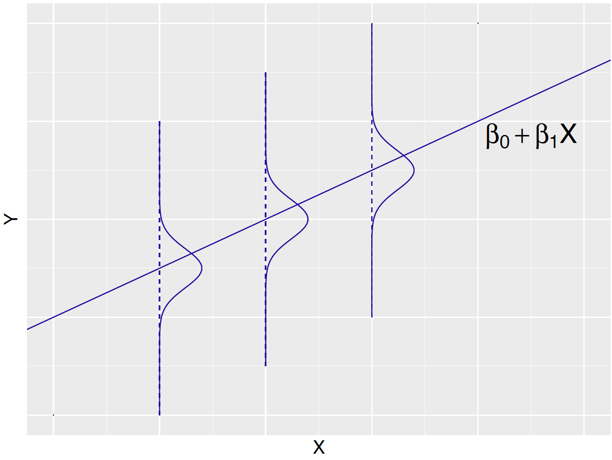
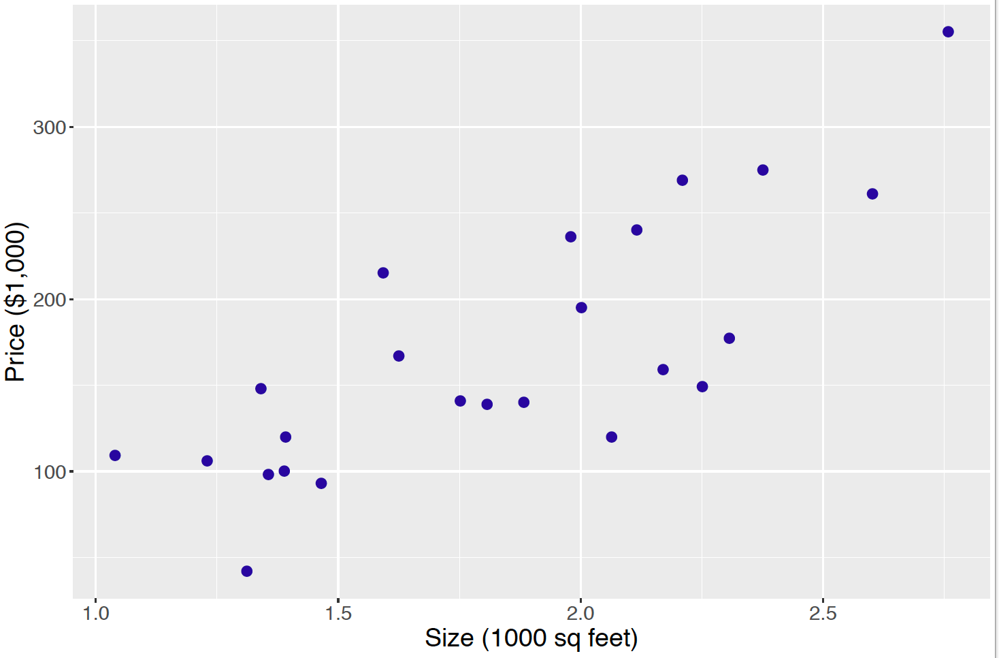
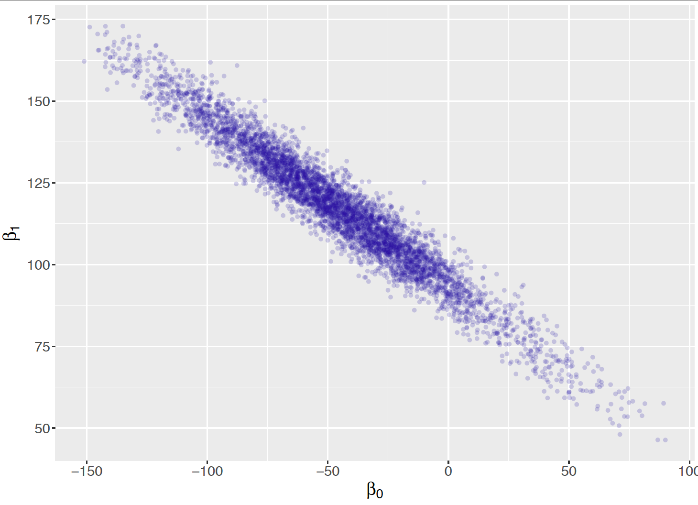
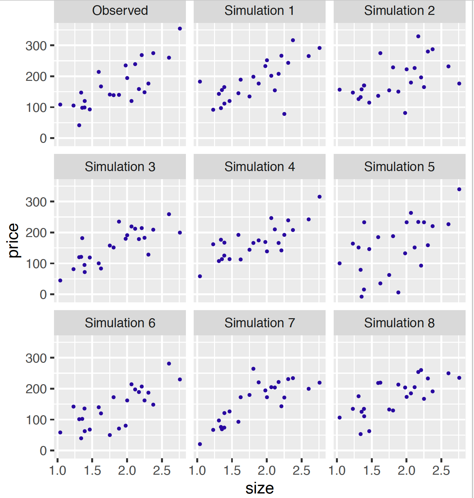
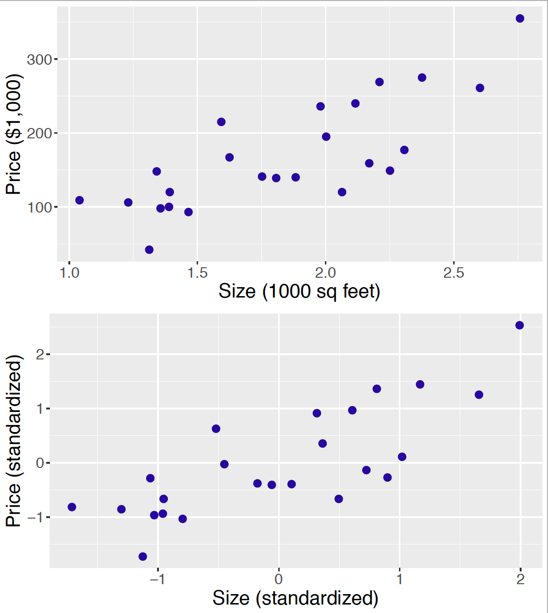
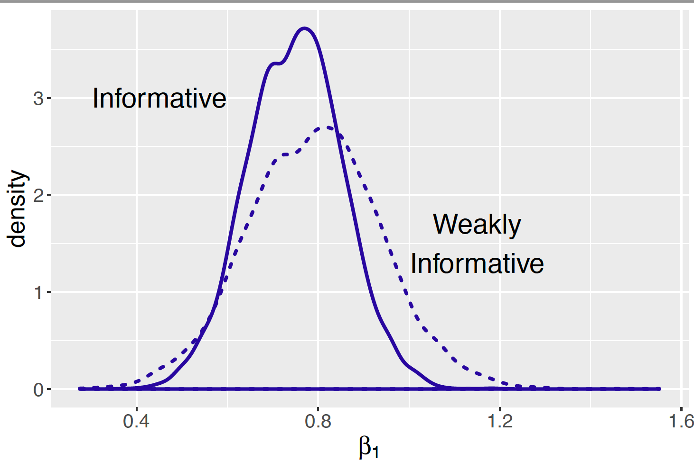
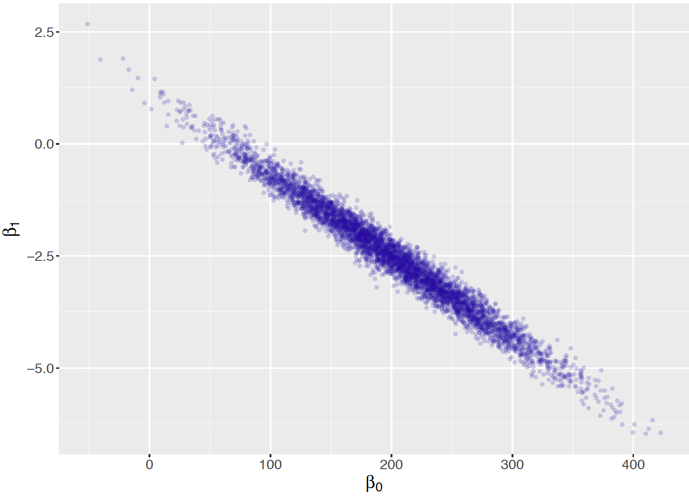
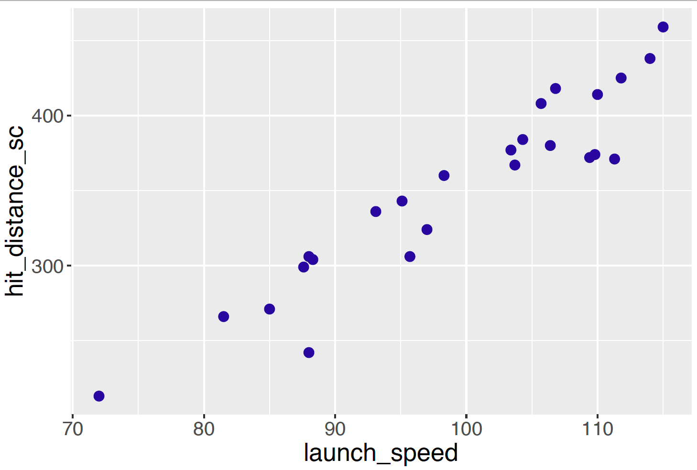

<!DOCTYPE html>
<html xmlns="http://www.w3.org/1999/xhtml" lang="" xml:lang="">
<head>

  <meta charset="utf-8" />
  <meta http-equiv="X-UA-Compatible" content="IE=edge" />
  <title>Chapter 11 Simple Linear Regression | Probability and Bayesian Modeling</title>
  <meta name="description" content="This is an introduction to probability and Bayesian modeling at the undergraduate level. It assumes the student has some background with calculus." />
  <meta name="generator" content="bookdown 0.13 and GitBook 2.6.7" />

  <meta property="og:title" content="Chapter 11 Simple Linear Regression | Probability and Bayesian Modeling" />
  <meta property="og:type" content="book" />
  
  
  <meta property="og:description" content="This is an introduction to probability and Bayesian modeling at the undergraduate level. It assumes the student has some background with calculus." />
  

  <meta name="twitter:card" content="summary" />
  <meta name="twitter:title" content="Chapter 11 Simple Linear Regression | Probability and Bayesian Modeling" />
  
  <meta name="twitter:description" content="This is an introduction to probability and Bayesian modeling at the undergraduate level. It assumes the student has some background with calculus." />
  

<meta name="author" content="Jim Albert and Jingchen Hu" />


<meta name="date" content="2019-09-30" />

  <meta name="viewport" content="width=device-width, initial-scale=1" />
  <meta name="apple-mobile-web-app-capable" content="yes" />
  <meta name="apple-mobile-web-app-status-bar-style" content="black" />
  
  
<link rel="prev" href="bayesian-hierarchical-modeling.html"/>
<link rel="next" href="bayesian-multiple-regression-and-logistic-models.html"/>
<script src="libs/jquery-2.2.3/jquery.min.js"></script>
<link href="libs/gitbook-2.6.7/css/style.css" rel="stylesheet" />
<link href="libs/gitbook-2.6.7/css/plugin-table.css" rel="stylesheet" />
<link href="libs/gitbook-2.6.7/css/plugin-bookdown.css" rel="stylesheet" />
<link href="libs/gitbook-2.6.7/css/plugin-highlight.css" rel="stylesheet" />
<link href="libs/gitbook-2.6.7/css/plugin-search.css" rel="stylesheet" />
<link href="libs/gitbook-2.6.7/css/plugin-fontsettings.css" rel="stylesheet" />


<style type="text/css">
a.sourceLine { display: inline-block; line-height: 1.25; }
a.sourceLine { pointer-events: none; color: inherit; text-decoration: inherit; }
a.sourceLine:empty { height: 1.2em; }
.sourceCode { overflow: visible; }
code.sourceCode { white-space: pre; position: relative; }
pre.sourceCode { margin: 0; }
@media screen {
div.sourceCode { overflow: auto; }
}
@media print {
code.sourceCode { white-space: pre-wrap; }
a.sourceLine { text-indent: -1em; padding-left: 1em; }
}
pre.numberSource a.sourceLine
  { position: relative; left: -4em; }
pre.numberSource a.sourceLine::before
  { content: attr(data-line-number);
    position: relative; left: -1em; text-align: right; vertical-align: baseline;
    border: none; pointer-events: all; display: inline-block;
    -webkit-touch-callout: none; -webkit-user-select: none;
    -khtml-user-select: none; -moz-user-select: none;
    -ms-user-select: none; user-select: none;
    padding: 0 4px; width: 4em;
    color: #aaaaaa;
  }
pre.numberSource { margin-left: 3em; border-left: 1px solid #aaaaaa;  padding-left: 4px; }
div.sourceCode
  {  }
@media screen {
a.sourceLine::before { text-decoration: underline; }
}
code span.al { color: #ff0000; font-weight: bold; } /* Alert */
code span.an { color: #60a0b0; font-weight: bold; font-style: italic; } /* Annotation */
code span.at { color: #7d9029; } /* Attribute */
code span.bn { color: #40a070; } /* BaseN */
code span.bu { } /* BuiltIn */
code span.cf { color: #007020; font-weight: bold; } /* ControlFlow */
code span.ch { color: #4070a0; } /* Char */
code span.cn { color: #880000; } /* Constant */
code span.co { color: #60a0b0; font-style: italic; } /* Comment */
code span.cv { color: #60a0b0; font-weight: bold; font-style: italic; } /* CommentVar */
code span.do { color: #ba2121; font-style: italic; } /* Documentation */
code span.dt { color: #902000; } /* DataType */
code span.dv { color: #40a070; } /* DecVal */
code span.er { color: #ff0000; font-weight: bold; } /* Error */
code span.ex { } /* Extension */
code span.fl { color: #40a070; } /* Float */
code span.fu { color: #06287e; } /* Function */
code span.im { } /* Import */
code span.in { color: #60a0b0; font-weight: bold; font-style: italic; } /* Information */
code span.kw { color: #007020; font-weight: bold; } /* Keyword */
code span.op { color: #666666; } /* Operator */
code span.ot { color: #007020; } /* Other */
code span.pp { color: #bc7a00; } /* Preprocessor */
code span.sc { color: #4070a0; } /* SpecialChar */
code span.ss { color: #bb6688; } /* SpecialString */
code span.st { color: #4070a0; } /* String */
code span.va { color: #19177c; } /* Variable */
code span.vs { color: #4070a0; } /* VerbatimString */
code span.wa { color: #60a0b0; font-weight: bold; font-style: italic; } /* Warning */
</style>

<link rel="stylesheet" href="style.css" type="text/css" />
</head>

<body>


  <div class="book without-animation with-summary font-size-2 font-family-1" data-basepath=".">

    <div class="book-summary">
      <nav role="navigation">

<ul class="summary">
<li><a href="./">Probability and Bayesian Modeling</a></li>

<li class="divider"></li>
<li class="chapter" data-level="1" data-path="probability-a-measurement-of-uncertainty.html"><a href="probability-a-measurement-of-uncertainty.html"><i class="fa fa-check"></i><b>1</b> Probability: A Measurement of Uncertainty</a><ul>
<li class="chapter" data-level="1.1" data-path="probability-a-measurement-of-uncertainty.html"><a href="probability-a-measurement-of-uncertainty.html#introduction"><i class="fa fa-check"></i><b>1.1</b> Introduction</a></li>
<li class="chapter" data-level="1.2" data-path="probability-a-measurement-of-uncertainty.html"><a href="probability-a-measurement-of-uncertainty.html#the-classical-view-of-a-probability"><i class="fa fa-check"></i><b>1.2</b> The Classical View of a Probability</a></li>
<li class="chapter" data-level="1.3" data-path="probability-a-measurement-of-uncertainty.html"><a href="probability-a-measurement-of-uncertainty.html#the-frequency-view-of-a-probability"><i class="fa fa-check"></i><b>1.3</b> The Frequency View of a Probability</a></li>
<li class="chapter" data-level="1.4" data-path="probability-a-measurement-of-uncertainty.html"><a href="probability-a-measurement-of-uncertainty.html#the-subjective-view-of-a-probability"><i class="fa fa-check"></i><b>1.4</b> The Subjective View of a Probability</a><ul>
<li class="chapter" data-level="1.4.1" data-path="probability-a-measurement-of-uncertainty.html"><a href="probability-a-measurement-of-uncertainty.html#measuring-probabilities-subjectively"><i class="fa fa-check"></i><b>1.4.1</b> Measuring probabilities subjectively</a></li>
</ul></li>
<li class="chapter" data-level="1.5" data-path="probability-a-measurement-of-uncertainty.html"><a href="probability-a-measurement-of-uncertainty.html#the-sample-space"><i class="fa fa-check"></i><b>1.5</b> The Sample Space</a><ul>
<li class="chapter" data-level="1.5.1" data-path="probability-a-measurement-of-uncertainty.html"><a href="probability-a-measurement-of-uncertainty.html#roll-two-fair-indistinguishable-dice"><i class="fa fa-check"></i><b>1.5.1</b> Roll two fair, indistinguishable dice</a></li>
</ul></li>
<li class="chapter" data-level="1.6" data-path="probability-a-measurement-of-uncertainty.html"><a href="probability-a-measurement-of-uncertainty.html#assigning-probabilities"><i class="fa fa-check"></i><b>1.6</b> Assigning Probabilities</a><ul>
<li class="chapter" data-level="1.6.1" data-path="probability-a-measurement-of-uncertainty.html"><a href="probability-a-measurement-of-uncertainty.html#events-and-event-operations"><i class="fa fa-check"></i><b>1.6.1</b> Events and Event Operations</a></li>
<li class="chapter" data-level="1.6.2" data-path="probability-a-measurement-of-uncertainty.html"><a href="probability-a-measurement-of-uncertainty.html#the-three-probability-axioms"><i class="fa fa-check"></i><b>1.6.2</b> The Three Probability Axioms</a></li>
<li class="chapter" data-level="1.6.3" data-path="probability-a-measurement-of-uncertainty.html"><a href="probability-a-measurement-of-uncertainty.html#the-complement-and-addition-properties"><i class="fa fa-check"></i><b>1.6.3</b> The Complement and Addition Properties</a></li>
</ul></li>
<li class="chapter" data-level="1.7" data-path="probability-a-measurement-of-uncertainty.html"><a href="probability-a-measurement-of-uncertainty.html#exercises"><i class="fa fa-check"></i><b>1.7</b> Exercises</a></li>
</ul></li>
<li class="chapter" data-level="2" data-path="counting-methods.html"><a href="counting-methods.html"><i class="fa fa-check"></i><b>2</b> Counting Methods</a><ul>
<li class="chapter" data-level="2.1" data-path="counting-methods.html"><a href="counting-methods.html#introduction-rolling-dice-yahtzee-and-roulette"><i class="fa fa-check"></i><b>2.1</b> Introduction: Rolling Dice, Yahtzee, and Roulette</a></li>
<li class="chapter" data-level="2.2" data-path="counting-methods.html"><a href="counting-methods.html#equally-likely-outcomes"><i class="fa fa-check"></i><b>2.2</b> Equally Likely Outcomes</a></li>
<li class="chapter" data-level="2.3" data-path="counting-methods.html"><a href="counting-methods.html#the-multiplication-counting-rule"><i class="fa fa-check"></i><b>2.3</b> The Multiplication Counting Rule</a></li>
<li class="chapter" data-level="2.4" data-path="counting-methods.html"><a href="counting-methods.html#permutations"><i class="fa fa-check"></i><b>2.4</b> Permutations</a></li>
<li class="chapter" data-level="2.5" data-path="counting-methods.html"><a href="counting-methods.html#combinations"><i class="fa fa-check"></i><b>2.5</b> Combinations</a><ul>
<li class="chapter" data-level="2.5.1" data-path="counting-methods.html"><a href="counting-methods.html#number-of-subsets"><i class="fa fa-check"></i><b>2.5.1</b> Number of subsets</a></li>
</ul></li>
<li class="chapter" data-level="2.6" data-path="counting-methods.html"><a href="counting-methods.html#arrangements-of-non-distinct-objects"><i class="fa fa-check"></i><b>2.6</b> Arrangements of Non-Distinct Objects</a></li>
<li class="chapter" data-level="2.7" data-path="counting-methods.html"><a href="counting-methods.html#playing-yahtzee"><i class="fa fa-check"></i><b>2.7</b> Playing Yahtzee</a></li>
<li class="chapter" data-level="2.8" data-path="counting-methods.html"><a href="counting-methods.html#exercises-1"><i class="fa fa-check"></i><b>2.8</b> Exercises</a></li>
</ul></li>
<li class="chapter" data-level="3" data-path="conditional-probability.html"><a href="conditional-probability.html"><i class="fa fa-check"></i><b>3</b> Conditional Probability</a><ul>
<li class="chapter" data-level="3.1" data-path="conditional-probability.html"><a href="conditional-probability.html#introduction-the-three-card-problem"><i class="fa fa-check"></i><b>3.1</b> Introduction: The Three Card Problem</a></li>
<li class="chapter" data-level="3.2" data-path="conditional-probability.html"><a href="conditional-probability.html#independent-events"><i class="fa fa-check"></i><b>3.2</b> Independent Events</a></li>
<li class="chapter" data-level="3.3" data-path="conditional-probability.html"><a href="conditional-probability.html#in-everyday-life"><i class="fa fa-check"></i><b>3.3</b> In Everyday Life</a></li>
<li class="chapter" data-level="3.4" data-path="conditional-probability.html"><a href="conditional-probability.html#in-a-two-way-table"><i class="fa fa-check"></i><b>3.4</b> In a Two-Way Table</a></li>
<li class="chapter" data-level="3.5" data-path="conditional-probability.html"><a href="conditional-probability.html#definition-and-the-multiplication-rule"><i class="fa fa-check"></i><b>3.5</b> Definition and the Multiplication Rule</a></li>
<li class="chapter" data-level="3.6" data-path="conditional-probability.html"><a href="conditional-probability.html#the-multiplication-rule"><i class="fa fa-check"></i><b>3.6</b> The Multiplication Rule</a></li>
<li class="chapter" data-level="3.7" data-path="conditional-probability.html"><a href="conditional-probability.html#the-multiplication-rule-under-independence"><i class="fa fa-check"></i><b>3.7</b> The Multiplication Rule Under Independence</a></li>
<li class="chapter" data-level="3.8" data-path="conditional-probability.html"><a href="conditional-probability.html#learning-using-bayes-rule"><i class="fa fa-check"></i><b>3.8</b> Learning Using Bayes’ Rule</a></li>
<li class="chapter" data-level="3.9" data-path="conditional-probability.html"><a href="conditional-probability.html#r-example-learning-about-a-spinner"><i class="fa fa-check"></i><b>3.9</b> R Example: Learning About a Spinner</a></li>
<li class="chapter" data-level="3.10" data-path="conditional-probability.html"><a href="conditional-probability.html#exercises-2"><i class="fa fa-check"></i><b>3.10</b> Exercises</a></li>
</ul></li>
<li class="chapter" data-level="4" data-path="discrete-distributions.html"><a href="discrete-distributions.html"><i class="fa fa-check"></i><b>4</b> Discrete Distributions</a><ul>
<li class="chapter" data-level="4.1" data-path="discrete-distributions.html"><a href="discrete-distributions.html#introduction-the-hat-check-problem"><i class="fa fa-check"></i><b>4.1</b> Introduction: The Hat Check Problem</a></li>
<li class="chapter" data-level="4.2" data-path="discrete-distributions.html"><a href="discrete-distributions.html#random-variable-and-probability-distribution"><i class="fa fa-check"></i><b>4.2</b> Random Variable and Probability Distribution</a></li>
<li class="chapter" data-level="4.3" data-path="discrete-distributions.html"><a href="discrete-distributions.html#probability-distribution"><i class="fa fa-check"></i><b>4.3</b> Probability distribution</a></li>
<li class="chapter" data-level="4.4" data-path="discrete-distributions.html"><a href="discrete-distributions.html#summarizing-a-probability-distribution"><i class="fa fa-check"></i><b>4.4</b> Summarizing a Probability Distribution</a></li>
<li class="chapter" data-level="4.5" data-path="discrete-distributions.html"><a href="discrete-distributions.html#standard-deviation-of-a-probability-distribution"><i class="fa fa-check"></i><b>4.5</b> Standard Deviation of a Probability Distribution</a></li>
<li class="chapter" data-level="4.6" data-path="discrete-distributions.html"><a href="discrete-distributions.html#coin-tossing-distributions"><i class="fa fa-check"></i><b>4.6</b> Coin-Tossing Distributions</a></li>
<li class="chapter" data-level="4.7" data-path="discrete-distributions.html"><a href="discrete-distributions.html#binomial-probabilities"><i class="fa fa-check"></i><b>4.7</b> Binomial probabilities</a></li>
<li class="chapter" data-level="4.8" data-path="discrete-distributions.html"><a href="discrete-distributions.html#binomial-experiments"><i class="fa fa-check"></i><b>4.8</b> Binomial experiments</a></li>
<li class="chapter" data-level="4.9" data-path="discrete-distributions.html"><a href="discrete-distributions.html#binomial-computations"><i class="fa fa-check"></i><b>4.9</b> Binomial computations</a></li>
<li class="chapter" data-level="4.10" data-path="discrete-distributions.html"><a href="discrete-distributions.html#mean-and-standard-deviation-of-a-binomial"><i class="fa fa-check"></i><b>4.10</b> Mean and standard deviation of a Binomial</a></li>
<li class="chapter" data-level="4.11" data-path="discrete-distributions.html"><a href="discrete-distributions.html#negative-binomial-experiments"><i class="fa fa-check"></i><b>4.11</b> Negative Binomial Experiments</a></li>
<li class="chapter" data-level="4.12" data-path="discrete-distributions.html"><a href="discrete-distributions.html#exercises-3"><i class="fa fa-check"></i><b>4.12</b> Exercises</a></li>
</ul></li>
<li class="chapter" data-level="5" data-path="continuous-distributions.html"><a href="continuous-distributions.html"><i class="fa fa-check"></i><b>5</b> Continuous Distributions</a><ul>
<li class="chapter" data-level="5.1" data-path="continuous-distributions.html"><a href="continuous-distributions.html#introduction-a-baseball-spinner-game"><i class="fa fa-check"></i><b>5.1</b> Introduction: A Baseball Spinner Game</a></li>
<li class="chapter" data-level="5.2" data-path="continuous-distributions.html"><a href="continuous-distributions.html#the-uniform-distribution"><i class="fa fa-check"></i><b>5.2</b> The Uniform Distribution</a></li>
<li class="chapter" data-level="5.3" data-path="continuous-distributions.html"><a href="continuous-distributions.html#binomial-probabilities-and-the-normal-curve"><i class="fa fa-check"></i><b>5.3</b> Binomial Probabilities and the Normal Curve</a></li>
<li class="chapter" data-level="5.4" data-path="continuous-distributions.html"><a href="continuous-distributions.html#sampling-distribution-of-the-mean"><i class="fa fa-check"></i><b>5.4</b> Sampling Distribution of the Mean</a></li>
</ul></li>
<li class="chapter" data-level="6" data-path="joint-probability-distributions.html"><a href="joint-probability-distributions.html"><i class="fa fa-check"></i><b>6</b> Joint Probability Distributions</a><ul>
<li class="chapter" data-level="6.1" data-path="joint-probability-distributions.html"><a href="joint-probability-distributions.html#joint-probability-mass-function-sampling-from-a-box"><i class="fa fa-check"></i><b>6.1</b> Joint Probability Mass Function: Sampling From a Box</a></li>
<li class="chapter" data-level="6.2" data-path="joint-probability-distributions.html"><a href="joint-probability-distributions.html#multinomial-experiments"><i class="fa fa-check"></i><b>6.2</b> Multinomial Experiments</a></li>
<li class="chapter" data-level="6.3" data-path="joint-probability-distributions.html"><a href="joint-probability-distributions.html#joint-density-functions"><i class="fa fa-check"></i><b>6.3</b> Joint Density Functions</a></li>
<li class="chapter" data-level="6.4" data-path="joint-probability-distributions.html"><a href="joint-probability-distributions.html#independence-and-measuring-association"><i class="fa fa-check"></i><b>6.4</b> Independence and Measuring Association</a></li>
<li class="chapter" data-level="6.5" data-path="joint-probability-distributions.html"><a href="joint-probability-distributions.html#flipping-a-random-coin-the-beta-binomial-distribution"><i class="fa fa-check"></i><b>6.5</b> Flipping a Random Coin: The Beta-Binomial Distribution</a></li>
<li class="chapter" data-level="6.6" data-path="joint-probability-distributions.html"><a href="joint-probability-distributions.html#bivariate-normal-distribution"><i class="fa fa-check"></i><b>6.6</b> Bivariate Normal Distribution</a></li>
<li class="chapter" data-level="6.7" data-path="joint-probability-distributions.html"><a href="joint-probability-distributions.html#exercises-4"><i class="fa fa-check"></i><b>6.7</b> Exercises</a></li>
</ul></li>
<li class="chapter" data-level="7" data-path="proportion.html"><a href="proportion.html"><i class="fa fa-check"></i><b>7</b> Learning About a Binomial Probability</a><ul>
<li class="chapter" data-level="7.1" data-path="proportion.html"><a href="proportion.html#introduction-thinking-about-a-proportion-subjectively"><i class="fa fa-check"></i><b>7.1</b> Introduction: Thinking About a Proportion Subjectively</a></li>
<li class="chapter" data-level="7.2" data-path="proportion.html"><a href="proportion.html#bayesian-inference-with-discrete-priors"><i class="fa fa-check"></i><b>7.2</b> Bayesian Inference with Discrete Priors</a><ul>
<li class="chapter" data-level="7.2.1" data-path="proportion.html"><a href="proportion.html#example-students-dining-preference"><i class="fa fa-check"></i><b>7.2.1</b> Example: students’ dining preference</a></li>
<li class="chapter" data-level="7.2.2" data-path="proportion.html"><a href="proportion.html#discrete-prior-distributions-for-proportion-p"><i class="fa fa-check"></i><b>7.2.2</b> Discrete prior distributions for proportion <span class="math inline">\(p\)</span></a></li>
<li class="chapter" data-level="7.2.3" data-path="proportion.html"><a href="proportion.html#likelihood"><i class="fa fa-check"></i><b>7.2.3</b> Likelihood</a></li>
<li class="chapter" data-level="7.2.4" data-path="proportion.html"><a href="proportion.html#posterior-distribution-for-proportion-p"><i class="fa fa-check"></i><b>7.2.4</b> Posterior distribution for proportion <span class="math inline">\(p\)</span></a></li>
<li class="chapter" data-level="7.2.5" data-path="proportion.html"><a href="proportion.html#inference-students-dining-preference"><i class="fa fa-check"></i><b>7.2.5</b> Inference: students’ dining preference</a></li>
<li class="chapter" data-level="7.2.6" data-path="proportion.html"><a href="proportion.html#discussion-using-a-discrete-prior"><i class="fa fa-check"></i><b>7.2.6</b> Discussion: using a discrete prior</a></li>
</ul></li>
<li class="chapter" data-level="7.3" data-path="proportion.html"><a href="proportion.html#continuous-priors"><i class="fa fa-check"></i><b>7.3</b> Continuous Priors</a><ul>
<li class="chapter" data-level="7.3.1" data-path="proportion.html"><a href="proportion.html#the-beta-distribution-and-probabilities"><i class="fa fa-check"></i><b>7.3.1</b> The Beta distribution and probabilities</a></li>
</ul></li>
<li class="chapter" data-level="7.4" data-path="proportion.html"><a href="proportion.html#updating-the-beta-prior"><i class="fa fa-check"></i><b>7.4</b> Updating the Beta Prior</a><ul>
<li class="chapter" data-level="7.4.1" data-path="proportion.html"><a href="proportion.html#bayes-rule-calculation"><i class="fa fa-check"></i><b>7.4.1</b> Bayes’ rule calculation</a></li>
<li class="chapter" data-level="7.4.2" data-path="proportion.html"><a href="proportion.html#from-beta-prior-to-beta-posterior"><i class="fa fa-check"></i><b>7.4.2</b> From Beta prior to Beta posterior</a></li>
</ul></li>
<li class="chapter" data-level="7.5" data-path="proportion.html"><a href="proportion.html#bayesian-inferences-with-continuous-priors"><i class="fa fa-check"></i><b>7.5</b> Bayesian Inferences with Continuous Priors</a><ul>
<li class="chapter" data-level="7.5.1" data-path="proportion.html"><a href="proportion.html#bayesian-hypothesis-testing"><i class="fa fa-check"></i><b>7.5.1</b> Bayesian hypothesis testing</a></li>
<li class="chapter" data-level="7.5.2" data-path="proportion.html"><a href="proportion.html#bayesian-credible-intervals"><i class="fa fa-check"></i><b>7.5.2</b> Bayesian credible intervals</a></li>
<li class="chapter" data-level="7.5.3" data-path="proportion.html"><a href="proportion.html#bayesian-prediction"><i class="fa fa-check"></i><b>7.5.3</b> Bayesian prediction</a></li>
</ul></li>
<li class="chapter" data-level="7.6" data-path="proportion.html"><a href="proportion.html#predictive-checking"><i class="fa fa-check"></i><b>7.6</b> Predictive Checking</a><ul>
<li class="chapter" data-level="7.6.1" data-path="proportion.html"><a href="proportion.html#comparing-bayesian-models"><i class="fa fa-check"></i><b>7.6.1</b> Comparing Bayesian models</a></li>
<li class="chapter" data-level="7.6.2" data-path="proportion.html"><a href="proportion.html#posterior-predictive-checking"><i class="fa fa-check"></i><b>7.6.2</b> Posterior predictive checking</a></li>
</ul></li>
<li class="chapter" data-level="7.7" data-path="proportion.html"><a href="proportion.html#exercises-5"><i class="fa fa-check"></i><b>7.7</b> Exercises</a></li>
</ul></li>
<li class="chapter" data-level="8" data-path="mean.html"><a href="mean.html"><i class="fa fa-check"></i><b>8</b> Modeling Measurement and Count Data</a><ul>
<li class="chapter" data-level="8.1" data-path="mean.html"><a href="mean.html#introduction-1"><i class="fa fa-check"></i><b>8.1</b> Introduction</a></li>
<li class="chapter" data-level="8.2" data-path="mean.html"><a href="mean.html#modeling-measurements"><i class="fa fa-check"></i><b>8.2</b> Modeling Measurements</a><ul>
<li class="chapter" data-level="8.2.1" data-path="mean.html"><a href="mean.html#examples"><i class="fa fa-check"></i><b>8.2.1</b> Examples</a></li>
<li class="chapter" data-level="8.2.2" data-path="mean.html"><a href="mean.html#the-general-approach"><i class="fa fa-check"></i><b>8.2.2</b> The general approach</a></li>
<li class="chapter" data-level="8.2.3" data-path="mean.html"><a href="mean.html#outline-of-chapter"><i class="fa fa-check"></i><b>8.2.3</b> Outline of chapter</a></li>
</ul></li>
<li class="chapter" data-level="8.3" data-path="mean.html"><a href="mean.html#Normal:Discrete"><i class="fa fa-check"></i><b>8.3</b> Bayesian Inference with Discrete Priors</a><ul>
<li class="chapter" data-level="8.3.1" data-path="mean.html"><a href="mean.html#example-roger-federers-time-to-serve"><i class="fa fa-check"></i><b>8.3.1</b> Example: Roger Federer’s time-to-serve</a></li>
<li class="chapter" data-level="8.3.2" data-path="mean.html"><a href="mean.html#Normal:SamplingModel:derivation"><i class="fa fa-check"></i><b>8.3.2</b> Simplification of the likelihood</a></li>
<li class="chapter" data-level="8.3.3" data-path="mean.html"><a href="mean.html#Normal:SamplingModel:inference"><i class="fa fa-check"></i><b>8.3.3</b> Inference: Federer’s time-to-serve</a></li>
</ul></li>
<li class="chapter" data-level="8.4" data-path="mean.html"><a href="mean.html#Normal:Continuous"><i class="fa fa-check"></i><b>8.4</b> Continuous Priors</a><ul>
<li class="chapter" data-level="8.4.1" data-path="mean.html"><a href="mean.html#Normal:Continuous:prior"><i class="fa fa-check"></i><b>8.4.1</b> The Normal prior for mean <span class="math inline">\(\mu\)</span></a></li>
<li class="chapter" data-level="8.4.2" data-path="mean.html"><a href="mean.html#Normal:Continuous:choosing"><i class="fa fa-check"></i><b>8.4.2</b> Choosing a Normal prior</a></li>
</ul></li>
<li class="chapter" data-level="8.5" data-path="mean.html"><a href="mean.html#Normal:ContinuousUpdate"><i class="fa fa-check"></i><b>8.5</b> Updating the Normal Prior</a><ul>
<li class="chapter" data-level="8.5.1" data-path="mean.html"><a href="mean.html#introduction-2"><i class="fa fa-check"></i><b>8.5.1</b> Introduction</a></li>
<li class="chapter" data-level="8.5.2" data-path="mean.html"><a href="mean.html#Normal:ContinuousUpdate:Overview"><i class="fa fa-check"></i><b>8.5.2</b> A quick peak at the update procedure</a></li>
<li class="chapter" data-level="8.5.3" data-path="mean.html"><a href="mean.html#Normal:ContinuousUpdate:BayesRule"><i class="fa fa-check"></i><b>8.5.3</b> Bayes’ rule calculation</a></li>
<li class="chapter" data-level="8.5.4" data-path="mean.html"><a href="mean.html#Normal:ContinuousUpdate:Conjugate"><i class="fa fa-check"></i><b>8.5.4</b> Conjugate Normal prior</a></li>
</ul></li>
<li class="chapter" data-level="8.6" data-path="mean.html"><a href="mean.html#Normal:ContinuousInference"><i class="fa fa-check"></i><b>8.6</b> Bayesian Inferences for Continuous Normal Mean</a><ul>
<li class="chapter" data-level="8.6.1" data-path="mean.html"><a href="mean.html#Normal:ContinuousInference:HTandCI"><i class="fa fa-check"></i><b>8.6.1</b> Bayesian hypothesis testing and credible interval</a></li>
<li class="chapter" data-level="8.6.2" data-path="mean.html"><a href="mean.html#Normal:ContinuousInference:Prediction"><i class="fa fa-check"></i><b>8.6.2</b> Bayesian prediction</a></li>
</ul></li>
<li class="chapter" data-level="8.7" data-path="mean.html"><a href="mean.html#Normal:PPC"><i class="fa fa-check"></i><b>8.7</b> Posterior Predictive Checking</a></li>
<li class="chapter" data-level="8.8" data-path="mean.html"><a href="mean.html#modeling-count-data"><i class="fa fa-check"></i><b>8.8</b> Modeling Count Data</a><ul>
<li class="chapter" data-level="8.8.1" data-path="mean.html"><a href="mean.html#examples-1"><i class="fa fa-check"></i><b>8.8.1</b> Examples</a></li>
<li class="chapter" data-level="8.8.2" data-path="mean.html"><a href="mean.html#the-poisson-distribution"><i class="fa fa-check"></i><b>8.8.2</b> The Poisson distribution</a></li>
<li class="chapter" data-level="8.8.3" data-path="mean.html"><a href="mean.html#bayesian-inferences"><i class="fa fa-check"></i><b>8.8.3</b> Bayesian inferences</a></li>
<li class="chapter" data-level="8.8.4" data-path="mean.html"><a href="mean.html#case-study-learning-about-website-counts"><i class="fa fa-check"></i><b>8.8.4</b> Case study: Learning about website counts</a></li>
</ul></li>
<li class="chapter" data-level="8.9" data-path="mean.html"><a href="mean.html#exercises-6"><i class="fa fa-check"></i><b>8.9</b> Exercises</a></li>
</ul></li>
<li class="chapter" data-level="9" data-path="simulation-by-markov-chain-monte-carlo.html"><a href="simulation-by-markov-chain-monte-carlo.html"><i class="fa fa-check"></i><b>9</b> Simulation by Markov Chain Monte Carlo</a><ul>
<li class="chapter" data-level="9.1" data-path="simulation-by-markov-chain-monte-carlo.html"><a href="simulation-by-markov-chain-monte-carlo.html#introduction-3"><i class="fa fa-check"></i><b>9.1</b> Introduction</a></li>
<li class="chapter" data-level="9.2" data-path="simulation-by-markov-chain-monte-carlo.html"><a href="simulation-by-markov-chain-monte-carlo.html#markov-chains"><i class="fa fa-check"></i><b>9.2</b> Markov Chains</a></li>
<li class="chapter" data-level="9.3" data-path="simulation-by-markov-chain-monte-carlo.html"><a href="simulation-by-markov-chain-monte-carlo.html#the-metropolis-algorithm"><i class="fa fa-check"></i><b>9.3</b> The Metropolis Algorithm</a></li>
<li class="chapter" data-level="9.4" data-path="simulation-by-markov-chain-monte-carlo.html"><a href="simulation-by-markov-chain-monte-carlo.html#example-cauchy-normal-problem"><i class="fa fa-check"></i><b>9.4</b> Example: Cauchy-Normal problem</a></li>
<li class="chapter" data-level="9.5" data-path="simulation-by-markov-chain-monte-carlo.html"><a href="simulation-by-markov-chain-monte-carlo.html#gibbs-sampling"><i class="fa fa-check"></i><b>9.5</b> Gibbs Sampling</a></li>
<li class="chapter" data-level="9.6" data-path="simulation-by-markov-chain-monte-carlo.html"><a href="simulation-by-markov-chain-monte-carlo.html#mcmc-inputs-and-diagnostics"><i class="fa fa-check"></i><b>9.6</b> MCMC Inputs and Diagnostics</a></li>
<li class="chapter" data-level="9.7" data-path="simulation-by-markov-chain-monte-carlo.html"><a href="simulation-by-markov-chain-monte-carlo.html#using-jags"><i class="fa fa-check"></i><b>9.7</b> Using JAGS</a></li>
<li class="chapter" data-level="9.8" data-path="simulation-by-markov-chain-monte-carlo.html"><a href="simulation-by-markov-chain-monte-carlo.html#exercises-7"><i class="fa fa-check"></i><b>9.8</b> Exercises</a></li>
</ul></li>
<li class="chapter" data-level="10" data-path="bayesian-hierarchical-modeling.html"><a href="bayesian-hierarchical-modeling.html"><i class="fa fa-check"></i><b>10</b> Bayesian Hierarchical Modeling</a><ul>
<li class="chapter" data-level="10.1" data-path="bayesian-hierarchical-modeling.html"><a href="bayesian-hierarchical-modeling.html#introduction-4"><i class="fa fa-check"></i><b>10.1</b> Introduction</a></li>
<li class="chapter" data-level="10.2" data-path="bayesian-hierarchical-modeling.html"><a href="bayesian-hierarchical-modeling.html#hierarchical-normal-modeling"><i class="fa fa-check"></i><b>10.2</b> Hierarchical Normal Modeling</a></li>
<li class="chapter" data-level="10.3" data-path="bayesian-hierarchical-modeling.html"><a href="bayesian-hierarchical-modeling.html#hierarchical-beta-binomial-modeling"><i class="fa fa-check"></i><b>10.3</b> Hierarchical Beta-Binomial Modeling</a></li>
<li class="chapter" data-level="10.4" data-path="bayesian-hierarchical-modeling.html"><a href="bayesian-hierarchical-modeling.html#exercises-8"><i class="fa fa-check"></i><b>10.4</b> Exercises</a></li>
</ul></li>
<li class="chapter" data-level="11" data-path="simple-linear-regression.html"><a href="simple-linear-regression.html"><i class="fa fa-check"></i><b>11</b> Simple Linear Regression</a><ul>
<li class="chapter" data-level="11.1" data-path="simple-linear-regression.html"><a href="simple-linear-regression.html#introduction-5"><i class="fa fa-check"></i><b>11.1</b> Introduction</a></li>
<li class="chapter" data-level="11.2" data-path="simple-linear-regression.html"><a href="simple-linear-regression.html#example-prices-and-areas-of-house-sales"><i class="fa fa-check"></i><b>11.2</b> Example: Prices and Areas of House Sales</a></li>
<li class="chapter" data-level="11.3" data-path="simple-linear-regression.html"><a href="simple-linear-regression.html#a-simple-linear-regression-model"><i class="fa fa-check"></i><b>11.3</b> A Simple Linear Regression Model</a></li>
<li class="chapter" data-level="11.4" data-path="simple-linear-regression.html"><a href="simple-linear-regression.html#a-weakly-informative-prior"><i class="fa fa-check"></i><b>11.4</b> A Weakly Informative Prior</a></li>
<li class="chapter" data-level="11.5" data-path="simple-linear-regression.html"><a href="simple-linear-regression.html#posterior-analysis"><i class="fa fa-check"></i><b>11.5</b> Posterior Analysis</a></li>
<li class="chapter" data-level="11.6" data-path="simple-linear-regression.html"><a href="simple-linear-regression.html#inference-through-mcmc"><i class="fa fa-check"></i><b>11.6</b> Inference through MCMC</a></li>
<li class="chapter" data-level="11.7" data-path="simple-linear-regression.html"><a href="simple-linear-regression.html#bayesian-inferences-with-simple-linear-regression"><i class="fa fa-check"></i><b>11.7</b> Bayesian Inferences with Simple Linear Regression</a></li>
<li class="chapter" data-level="11.8" data-path="simple-linear-regression.html"><a href="simple-linear-regression.html#informative-prior-1"><i class="fa fa-check"></i><b>11.8</b> Informative Prior</a></li>
<li class="chapter" data-level="11.9" data-path="simple-linear-regression.html"><a href="simple-linear-regression.html#a-conditional-means-prior"><i class="fa fa-check"></i><b>11.9</b> A Conditional Means Prior</a></li>
<li class="chapter" data-level="11.10" data-path="simple-linear-regression.html"><a href="simple-linear-regression.html#exercises-9"><i class="fa fa-check"></i><b>11.10</b> Exercises</a></li>
</ul></li>
<li class="chapter" data-level="12" data-path="bayesian-multiple-regression-and-logistic-models.html"><a href="bayesian-multiple-regression-and-logistic-models.html"><i class="fa fa-check"></i><b>12</b> Bayesian Multiple Regression and Logistic Models</a><ul>
<li class="chapter" data-level="12.1" data-path="bayesian-multiple-regression-and-logistic-models.html"><a href="bayesian-multiple-regression-and-logistic-models.html#introduction-6"><i class="fa fa-check"></i><b>12.1</b> Introduction</a></li>
<li class="chapter" data-level="12.2" data-path="bayesian-multiple-regression-and-logistic-models.html"><a href="bayesian-multiple-regression-and-logistic-models.html#bayesian-multiple-linear-regression"><i class="fa fa-check"></i><b>12.2</b> Bayesian Multiple Linear Regression</a></li>
<li class="chapter" data-level="12.3" data-path="bayesian-multiple-regression-and-logistic-models.html"><a href="bayesian-multiple-regression-and-logistic-models.html#bayesian-logistic-regression"><i class="fa fa-check"></i><b>12.3</b> Bayesian Logistic Regression </a></li>
<li class="chapter" data-level="12.4" data-path="bayesian-multiple-regression-and-logistic-models.html"><a href="bayesian-multiple-regression-and-logistic-models.html#exercises-10"><i class="fa fa-check"></i><b>12.4</b> Exercises</a></li>
</ul></li>
<li class="chapter" data-level="13" data-path="case-studies.html"><a href="case-studies.html"><i class="fa fa-check"></i><b>13</b> Case Studies</a><ul>
<li class="chapter" data-level="13.1" data-path="case-studies.html"><a href="case-studies.html#introduction-7"><i class="fa fa-check"></i><b>13.1</b> Introduction</a></li>
<li class="chapter" data-level="13.2" data-path="case-studies.html"><a href="case-studies.html#federalist-papers-study"><i class="fa fa-check"></i><b>13.2</b> Federalist Papers Study</a></li>
<li class="chapter" data-level="13.3" data-path="case-studies.html"><a href="case-studies.html#negative-binomial-sampling"><i class="fa fa-check"></i><b>13.3</b> Negative Binomial sampling</a></li>
<li class="chapter" data-level="13.4" data-path="case-studies.html"><a href="case-studies.html#comparison-of-rates-for-two-authors"><i class="fa fa-check"></i><b>13.4</b> Comparison of rates for two authors</a></li>
<li class="chapter" data-level="13.5" data-path="case-studies.html"><a href="case-studies.html#which-words-distinguish-the-two-authors"><i class="fa fa-check"></i><b>13.5</b> Which words distinguish the two authors?</a></li>
<li class="chapter" data-level="13.6" data-path="case-studies.html"><a href="case-studies.html#career-trajectories"><i class="fa fa-check"></i><b>13.6</b> Career Trajectories</a></li>
<li class="chapter" data-level="13.7" data-path="case-studies.html"><a href="case-studies.html#latent-class-modeling"><i class="fa fa-check"></i><b>13.7</b> Latent Class Modeling</a></li>
<li class="chapter" data-level="13.8" data-path="case-studies.html"><a href="case-studies.html#exercises-11"><i class="fa fa-check"></i><b>13.8</b> Exercises</a></li>
</ul></li>
<li class="divider"></li>
<li><a href="https://github.com/rstudio/bookdown" target="blank">Published with bookdown</a></li>

</ul>

      </nav>
    </div>

    <div class="book-body">
      <div class="body-inner">
        <div class="book-header" role="navigation">
          <h1>
            <i class="fa fa-circle-o-notch fa-spin"></i><a href="./">Probability and Bayesian Modeling</a>
          </h1>
        </div>

        <div class="page-wrapper" tabindex="-1" role="main">
          <div class="page-inner">

            <section class="normal" id="section-">
<div id="simple-linear-regression" class="section level1">
<h1><span class="header-section-number">Chapter 11</span> Simple Linear Regression</h1>
<div id="introduction-5" class="section level2">
<h2><span class="header-section-number">11.1</span> Introduction</h2>
<p>For continuous response variables such as Roger Federer’s time-to-serve data in Chapter 8 and snowfall amounts in Buffalo, New York in Chapter 9, Normal sampling models have been applied. The basic underlying assumption in a Normal sampling model is that observations are identically and independently distributed (i.i.d.) according to a Normal density, as in <span class="math inline">\(Y_i \overset{i.i.d.}{\sim}\textrm{Normal}(\mu, \sigma)\)</span>.</p>
<p><strong>Adding a predictor variable</strong></p>
<p>When continuous responses are observed, it is common that other variables are recorded that may be associated with the primary response measure. In the Buffalo snowfall example, one may also observe the average temperature in winter season and one believes that the average season temperature is associated with the corresponding amount of snowfall. For the tennis example, one may believe that the time-to-serve measurement is related to the rally length of the previous point. Specifically, a long rally in the previous point may be associated with a long time-to-serve in the current point.</p>
<p>In Chapter 9, a Normal curve was used to model the snowfalls <span class="math inline">\(Y_1, ..., Y_n\)</span> for <span class="math inline">\(n\)</span> winters,
<span class="math display" id="eq:normsampling">\[\begin{equation}
Y_i \mid \mu, \sigma \overset{i.i.d.}{\sim} \textrm{Normal}(\mu, \sigma), \, \, i = 1, \cdots, n.
\label{eq:introLik1}
\tag{11.1}
\end{equation}\]</span>
The model in Equation () assumes that each winter snowfall follows the same Normal density with mean <span class="math inline">\(\mu\)</span> and <span class="math inline">\(\sigma\)</span>. From a Bayesian viewpoint, one assigns prior distributions for <span class="math inline">\(\mu\)</span> and <span class="math inline">\(\sigma\)</span> and bases inferences about these parameters from the posterior distribution.</p>
<p>However when the average temperature in winter <span class="math inline">\(i\)</span>, <span class="math inline">\(x_i\)</span>, is also available, one might wonder if the snowfall amount <span class="math inline">\(Y_i\)</span> can be explained by the average temperature <span class="math inline">\(x_i\)</span> in the same winter. One typically calls <span class="math inline">\(x_i\)</span> a predictor variable as one is interested in predicting the snowfall amount <span class="math inline">\(Y_i\)</span> from the value of <span class="math inline">\(x_i\)</span>. How does one extend the basic Normal sampling model in Equation () to study the possible relationship between the average temperature and the snowfall amount?</p>
<p><strong>An observation-specific mean</strong></p>
<p>The model in Equation () assumes a common mean <span class="math inline">\(\mu\)</span> for each <span class="math inline">\(Y_i\)</span>. Since one wishes to introduce a new variable <span class="math inline">\(x_i\)</span> specific to winter <span class="math inline">\(i\)</span>, the model in Equation () is adjusted to Equation () where the common mean <span class="math inline">\(\mu\)</span> is replaced by a winter specific mean <span class="math inline">\(\mu_i\)</span> .
<span class="math display" id="eq:obsmean">\[\begin{equation}
Y_i \mid \mu_i, \sigma \overset{ind}{\sim} \textrm{Normal}(\mu_i, \sigma), \, \, i = 1, \cdots, n.
\label{eq:introLik2}
\tag{11.2}
\end{equation}\]</span>
Note that the observations <span class="math inline">\(Y_1, ..., Y_n\)</span> are no longer identically distributed since they have different means, but the observations are still independent which is indicated by <span class="math inline">\(ind\)</span> written over the distributed <span class="math inline">\(\sim\)</span> symbol in the formula.</p>
<p><strong>Linear relationship between the mean and the predictor</strong></p>
<p>One basic approach for relating a predictor <span class="math inline">\(x_i\)</span> and the response <span class="math inline">\(Y_i\)</span> is to assume that the mean of <span class="math inline">\(Y_i\)</span>, <span class="math inline">\(\mu_i\)</span>, is a linear function of <span class="math inline">\(x_i\)</span>. This linear relationship is written as
<span class="math display" id="eq:linear">\[\begin{equation}
\mu_i = \beta_0 + \beta_1 x_i,
\label{eq:introLink}
\tag{11.3}
\end{equation}\]</span>
for <span class="math inline">\(i = 1, \dots, n\)</span>. In Equation (), each <span class="math inline">\(x_i\)</span> is a known constant (that is why a small letter is used for <span class="math inline">\(x\)</span>) and
<span class="math inline">\(\beta_0\)</span> and <span class="math inline">\(\beta_1\)</span> are unknown parameters. As one might guess, these intercept and slope parameters are random. One assigns a prior distribution to <span class="math inline">\((\beta_0, \beta_1)\)</span> and perform inference by summarizing the posterior distribution of these parameters.</p>
<p>In this model, the linear function <span class="math inline">\(\beta_0 + \beta_1 x_i\)</span> is interpreted as the <strong>expected</strong> snowfall amount when the average temperature is equal to <span class="math inline">\(x_i\)</span>. The intercept <span class="math inline">\(\beta_0\)</span> represents the expected snowfall when the winter temperature is <span class="math inline">\(x_i = 0\)</span>. The slope parameter <span class="math inline">\(\beta_1\)</span> gives the increase in the expected snowfall when the temperature <span class="math inline">\(x_i\)</span> increases by one degree. It is important to note that the linear relationship in Equation () with parameters <span class="math inline">\(\beta_0\)</span> and <span class="math inline">\(\beta_1\)</span> describes the association between the mean <span class="math inline">\(\mu_i\)</span> and the predictor <span class="math inline">\(x_i\)</span>. This linear relationship is a statement about the expected or average snowfall amount <span class="math inline">\(\mu_i\)</span>, not the <strong>actual</strong> snowfall amount <span class="math inline">\(Y_i\)</span>.</p>
<p><strong>Linear regression model</strong></p>
<p>Substituting Equation () into the model in Equation (), one obtains the linear regression model.
<span class="math display" id="eq:linearregression">\[\begin{equation}
Y_i \mid \beta_0, \beta_1, \sigma \overset{ind}{\sim} \textrm{Normal}(\beta_0 + \beta_1 x_i, \sigma), \, \, i = 1, \cdots, n.
\label{eq:introLik3}
\tag{11.4}
\end{equation}\]</span>
This is a special case of a Normal sampling model, where the <span class="math inline">\(Y_i\)</span> independently follow a Normal density with observation specific mean <span class="math inline">\(\beta_0 + \beta_1 x_i\)</span> and common standard deviation <span class="math inline">\(\sigma\)</span>. Since there is only a single predictor <span class="math inline">\(x_i\)</span>, this model is commonly called the simple linear regression model.</p>
<p>One restates this regression model as
<span class="math display" id="eq:linearreg2">\[\begin{equation}
Y_i  = \mu_i + \epsilon_i, i = 1, \cdots, n,
\label{eq:introLik3a}
\tag{11.5}
\end{equation}\]</span>
where the mean response <span class="math inline">\(\mu_i = \beta_0 + \beta_1 x_i\)</span> and the residuals <span class="math inline">\(\epsilon_1, ..., \epsilon_n\)</span> are <span class="math inline">\(i.i.d.\)</span> from a Normal distribution with mean 0 and standard deviation <span class="math inline">\(\sigma\)</span>.
In the context of our example, this model says that the snowfall for a particular season <span class="math inline">\(Y_i\)</span> is a linear function of the average season temperature <span class="math inline">\(x_i\)</span> plus a random error <span class="math inline">\(\epsilon_i\)</span> that is Normal with mean 0 and standard deviation <span class="math inline">\(\sigma\)</span>.</p>
<p>The simple linear regression model is displayed in Figure 11.1. The line in the graph represents the equation <span class="math inline">\(\beta_0 + \beta_1 x\)</span> for the mean response <span class="math inline">\(\mu = E(Y)\)</span>. The actual response <span class="math inline">\(Y\)</span> is equal to <span class="math inline">\(\beta_0 + \beta_1 x + \epsilon\)</span> where the random variable <span class="math inline">\(\epsilon\)</span> is distributed Normal with mean 0 and standard deviation <span class="math inline">\(\sigma\)</span>. The Normal curves (drawn sideways) represent the locations of the response <span class="math inline">\(Y\)</span> for three distinct values of the predictor <span class="math inline">\(x\)</span>. The parameter <span class="math inline">\(\sigma\)</span> represents the deviation of the response <span class="math inline">\(Y\)</span> about the mean value <span class="math inline">\(\beta_0 + \beta_1 x\)</span>. One is interested in learning about the parameters <span class="math inline">\(\beta_0\)</span> and <span class="math inline">\(\beta_1\)</span> that describe the line and the standard deviation <span class="math inline">\(\sigma\)</span> which describes the deviations of the random response about the line.</p>
<div class="figure"><span id="fig:unnamed-chunk-1"></span>

<p class="caption">
Figure 11.1: Display of linear regression model. The line represents the unknown regression line <span class="math inline">\(b_0 + b_1 x\)</span> and the Normal curves (drawn sideways) represent the distribution of the response <span class="math inline">\(Y\)</span> about the line.
</p>
</div>

<p>In the linear regression model, the observation <span class="math inline">\(Y_i\)</span> is random, the predictor <span class="math inline">\(x_i\)</span> is a fixed constant and the unknown parameters are <span class="math inline">\(\beta_0\)</span>, <span class="math inline">\(\beta_1\)</span>, and <span class="math inline">\(\sigma\)</span>. Using the Bayesian paradigm, a joint prior distribution is assigned to <span class="math inline">\((\beta_0, \beta_1, \sigma)\)</span>. After the response values <span class="math inline">\(Y_i = y_i, i = 1, ..., n\)</span> are observed, one learns about the parameters through the posterior distribution. An MCMC algorithm will be used to simulate a posterior sample, and using the simulation sample, one makes inferences about the expected response <span class="math inline">\(\beta_0 + \beta_1 x\)</span> for a specific value of the predictor <span class="math inline">\(x\)</span>. Also, one will be able to assess the sizes of the errors by summarizing the posterior density of the standard deviation <span class="math inline">\(\sigma\)</span>.</p>
<p>In our snowfall example, one is interested in learning about the relationship between the average temperature and the mean snowfall that is described by the linear model <span class="math inline">\(\mu = \beta_0 + \beta_1 x\)</span>. If the posterior probability that <span class="math inline">\(\beta_1 &lt; 0\)</span> is large, that indicates that lower average temperatures will likely result in larger mean snowfall. Also one is interested in using this model for prediction. If given the average winter temperature in the following season, can one predict the Buffalo snowfall? This question is addressed by use of the posterior predictive distribution of a future snowfall <span class="math inline">\(\tilde Y\)</span>. Using the usual computing strategy, one simulates a large sample of values from the posterior predictive distribution and finds an interval that contains <span class="math inline">\(\tilde Y\)</span> with a prescribed probability.</p>
<p>In this chapter, regression is introduced in Section  by a dataset containing several characteristics of 24 house sales in an area in Ohio. In this example, one is interested in predicting the price of a house given the house size and Section  presents a simple linear regression model to explain this relationship.
The practice of standardizing variables will be introduced which is helpful in the process of assigning an informative prior on the regression parameters. Inference through MCMC is presented in Section  and methods for performing Bayesian inferences with simple linear regression are illustrated in Section .</p>
</div>
<div id="example-prices-and-areas-of-house-sales" class="section level2">
<h2><span class="header-section-number">11.2</span> Example: Prices and Areas of House Sales</h2>
<p>Zillow is an online real estate database company that collects information on 110 million homes across the United States. Data is collected from a random sample of 24 houses for sale in the Findlay, Ohio area during October 2018. For each house, the dataset contains the selling price (in $1000) and size (in 1000 square feet). Table 11.1 displays the first five observations of the dataset.</p>
<p>Table 11.1. The house index, price (in $1000), and size (in 1000 sq feet) of 5 house sales in Findlay, Ohio area during October 2018. The random sample contains 24 house sales.</p>
<table>
<thead>
<tr class="header">
<th align="center">Index</th>
<th align="center">Price ($1000)</th>
<th align="center">Size (1000 sq feet)</th>
</tr>
</thead>
<tbody>
<tr class="odd">
<td align="center">1</td>
<td align="center">167</td>
<td align="center">1.625</td>
</tr>
<tr class="even">
<td align="center">2</td>
<td align="center">236</td>
<td align="center">1.980</td>
</tr>
<tr class="odd">
<td align="center">3</td>
<td align="center">355</td>
<td align="center">2.758</td>
</tr>
<tr class="even">
<td align="center">4</td>
<td align="center">148</td>
<td align="center">1.341</td>
</tr>
<tr class="odd">
<td align="center">5</td>
<td align="center">93</td>
<td align="center">1.465</td>
</tr>
</tbody>
</table>
<p>Suppose one is interested in predicting a house’s selling price from its house size. In this example, one is treating price as the response variable and size as the single predictor. Figure 11.2 constructs a scatterplot of price (y-axis) against the size (x-axis) for the houses in the sample. This figure shows a positive relationship between the size and the price of a house sale, suggesting that the house sale price increases as the house size increases. Can one quantify this relationship through a Bayesian linear regression model? In particular, is there sufficient evidence that there is a positive association among the population of all homes? Can one predict the sale price of a home given its size?</p>

<div class="figure"><span id="fig:unnamed-chunk-2"></span>

<p class="caption">
Figure 11.2: Scatterplot of price against size of house sales.
</p>
</div>
</div>
<div id="a-simple-linear-regression-model" class="section level2">
<h2><span class="header-section-number">11.3</span> A Simple Linear Regression Model</h2>
<p>The house sale example can be fit into the linear regression model framework.
It is assumed the response variable, the price of a house sale, is a continuous variable is distributed as a Normal random variable. Specifically, the price <span class="math inline">\(Y_i\)</span> for house <span class="math inline">\(i\)</span>, is Normally distributed with mean <span class="math inline">\(\mu_i\)</span> and standard deviation <span class="math inline">\(\sigma\)</span>.
<span class="math display" id="eq:simplereg1">\[\begin{equation}
Y_i \mid \mu_i, \sigma \overset{ind}{\sim} \textrm{Normal}(\mu_i, \sigma),
\label{eq:modelLik1}
\tag{11.6}
\end{equation}\]</span>
where <span class="math inline">\(i = 1, \cdots, n\)</span>, where <span class="math inline">\(n = 24\)</span> is the number of homes in the dataset. The <span class="math inline">\(ind\)</span> over <span class="math inline">\(\sim\)</span> in Equation () indicates that each response <span class="math inline">\(Y_i\)</span> independently follows its own Normal density. Moreover, unlike the house-specific mean <span class="math inline">\(\mu_i\)</span>, a common standard deviation <span class="math inline">\(\sigma\)</span> is shared among all responses <span class="math inline">\(Y_i\)</span>’s.</p>
<p>Since one believes the size of the house is helpful in understanding a house’s price,<br />
one represents the mean price <span class="math inline">\(\mu_i\)</span> as a linear function of the house size <span class="math inline">\(x_i\)</span> depending on two parameters <span class="math inline">\(\beta_0\)</span> and <span class="math inline">\(\beta_1\)</span>.</p>
<p><span class="math display" id="eq:simplereg2">\[\begin{equation}
\mu_i = \beta_0 + \beta_1 x_i
\label{eq:modelLink}
\tag{11.7}
\end{equation}\]</span></p>
<p>How does one interpret the intercept and slope parameters? The intercept <span class="math inline">\(\beta_0\)</span> gives the expected price <span class="math inline">\(\mu_i\)</span> for a house <span class="math inline">\(i\)</span> that has zero square feet (<span class="math inline">\(x_i = 0\)</span>). This is not a meaningful parameter since no house (not even a tiny house) has zero square feet.
The slope parameter <span class="math inline">\(\beta_1\)</span> gives the change in the expected price <span class="math inline">\(\mu_i\)</span>, when the size <span class="math inline">\(x_i\)</span> of house <span class="math inline">\(i\)</span> increases by 1 unit, i.e., increases by 1000 square feet.</p>
</div>
<div id="a-weakly-informative-prior" class="section level2">
<h2><span class="header-section-number">11.4</span> A Weakly Informative Prior</h2>
<p>In some situations, the user has limited prior information about the location of the regression parameters or the standard deviation. To implement the Bayesian approach, one has to assign a prior distribution, but it is desirable in this situation to assign a prior that has little impact on the posterior distribution.</p>
<p>Suppose that one’s beliefs about the regression coefficients <span class="math inline">\((\beta_0, \beta_1)\)</span> are independent from one’s opinion about the standard deviation <span class="math inline">\(\sigma\)</span>. Then the joint prior density for the parameters <span class="math inline">\((\beta_0, \beta_1, \sigma)\)</span> is written as
<span class="math display">\[\begin{equation*}
\pi(\beta_0, \beta_1, \sigma) = \pi(\beta_0, \beta_1) \pi(\sigma).
\end{equation*}\]</span>
The choice of weakly informative priors on <span class="math inline">\((\beta_0, \beta_1)\)</span> and <span class="math inline">\(\sigma\)</span> are described in separate sections.</p>
<p><strong>Prior on the intercept <span class="math inline">\(\beta_0\)</span> and slope <span class="math inline">\(\beta_1\)</span></strong></p>
<p>If one assumes independence of one’s opinion about the intercept and the slope, one represents the joint prior <span class="math inline">\(\pi(\beta_0, \beta_1)\)</span> as the product of priors <span class="math inline">\(\pi(\beta_0) \pi(\beta_1)\)</span>, and it is convenient to use Normal priors. So it is assumed <span class="math inline">\(\beta_0 \sim \textrm{Normal}(\mu_0, s_0)\)</span> and <span class="math inline">\(\beta_1 \sim \textrm{Normal}(\mu_1, s_1)\)</span>.</p>
<p>The choice of the standard deviation <span class="math inline">\(s_j\)</span> in the Normal prior reflects how confident the person believes in a prior guess of <span class="math inline">\(\beta_j\)</span>. If one has little information about the location of a regression parameter, then the choice of the prior guess <span class="math inline">\(\mu_j\)</span> is not that important and one chooses a large value for the prior standard deviation <span class="math inline">\(s_j\)</span>.
So the regression intercept and slope are each assigned a Normal prior with a mean of 0 and standard deviation equal to the large value of 100.</p>
<p><strong>Prior on sampling standard deviation <span class="math inline">\(\sigma\)</span></strong></p>
<p>In the current regression model, one assumes that <span class="math inline">\(Y_i \sim \textrm{Normal}(\beta_0 + \beta_1 x_i, \sigma)\)</span> and <span class="math inline">\(\sigma\)</span> represents the variability of the house price about the regression line. It is typically hard to specify informative beliefs about a standard deviation than a mean parameter such as <span class="math inline">\(\beta_0 + \beta_1 x\)</span>.
So following the suggestions from Chapter 9 and Chapter 10, one assigns a weakly informative prior for the standard deviation <span class="math inline">\(\sigma\)</span>.
A Gamma prior for the precision parameter <span class="math inline">\(\phi = 1/\sigma^2\)</span> with small values of the shape and rate parameters, say <span class="math inline">\(a = 1\)</span> and <span class="math inline">\(b = 1\)</span>, was seen in those chapters to represent weak prior information, and a similar prior is assigned in this regression setting.
<span class="math display">\[\begin{equation*}
\phi = 1/\sigma^2 \sim \textrm{Gamma}(1, 1).
\end{equation*}\]</span></p>
</div>
<div id="posterior-analysis" class="section level2">
<h2><span class="header-section-number">11.5</span> Posterior Analysis</h2>
<p>In the sampling model one has that <span class="math inline">\(Y_1, ..., Y_n\)</span> are independent with <span class="math inline">\(Y_i \sim \textrm{Normal}(\beta_0 + \beta_1 x_i, \sigma)\)</span>. Suppose the pairs <span class="math inline">\((x_1, y_1), ..., (x_n, y_n)\)</span> are observed. The likelihood is the joint density of these observations viewed as a function of <span class="math inline">\((\beta_0, \beta_1, \sigma)\)</span>. For convenience, the standard deviation <span class="math inline">\(\sigma\)</span> is reexpressed as the precision <span class="math inline">\(\phi = 1 / \sigma^2\)</span>.</p>
<p><span class="math display" id="eq:linreglike">\[\begin{eqnarray}
L(\beta_0, \beta_1, \phi) &amp;= &amp; \prod_{i=1}^n \left[\frac{\sqrt{\phi}}{\sqrt{2 \pi}}
\exp\left\{-\frac{\phi}{2}(y_i - \beta_0 - \beta_1 x_i)^2\right\}\right]
 \nonumber \\
&amp; \propto &amp; \phi^{\frac{n}{2}} \exp\left\{-\frac{\phi}{2}\sum_{i=1}^n (y_i - \beta_0 - \beta_1 x_i)^2\right\} 
\tag{11.8}
\end{eqnarray}\]</span></p>
<p>By multiplying the likelihood by the prior for <span class="math inline">\((\beta_0, \beta_1, \phi)\)</span>, one obtains an expression for the posterior density.
<span class="math display" id="eq:linregpost">\[\begin{eqnarray}
\pi(\beta_0, \beta_1, \phi \mid y_1, \cdots, y_n) &amp;\propto &amp; \phi^{\frac{n}{2}} \exp\left\{-\frac{\phi}{2}\sum_{i=1}^n (y_i - \beta_0 - \beta_1 x_i)^2\right\} \nonumber \\
 &amp; \times &amp; \exp\left\{-\frac{1}{2 s_0^2}(\beta_0 - \mu_0)^2\right\} 
 \exp\left\{-\frac{1}{2 s_1^2}(\beta_1 - \mu_1)^2\right\} \nonumber \\ 
&amp; \times &amp; \phi^{a-1} \exp(-b \phi) 
\tag{11.9}
\end{eqnarray}\]</span>
Since this is not a familiar probability distribution, one needs to use an MCMC algorithm to obtain simulated draws from the posterior.</p>
</div>
<div id="inference-through-mcmc" class="section level2">
<h2><span class="header-section-number">11.6</span> Inference through MCMC</h2>
<p>It is convenient to draw an MCMC sample from a regression model using the JAGS software.
One attractive feature of JAGS is that it is straightforward to transpose the statement of the Bayesian model (sampling density and prior) directly to the JAGS model script.</p>
<p><strong>Describe the model by a script</strong></p>
<p>The first step in using JAGS is writing the following script defining the linear regression model, saving the script in the character string ```modelString}.</p>
<div class="sourceCode" id="cb1"><pre class="sourceCode r"><code class="sourceCode r"><a class="sourceLine" id="cb1-1" data-line-number="1">modelString &lt;-<span class="st">&quot;</span></a>
<a class="sourceLine" id="cb1-2" data-line-number="2"><span class="st">model {</span></a>
<a class="sourceLine" id="cb1-3" data-line-number="3"><span class="st">## sampling</span></a>
<a class="sourceLine" id="cb1-4" data-line-number="4"><span class="st">for (i in 1:N){</span></a>
<a class="sourceLine" id="cb1-5" data-line-number="5"><span class="st">   y[i] ~ dnorm(beta0 + beta1*x[i], invsigma2)</span></a>
<a class="sourceLine" id="cb1-6" data-line-number="6"><span class="st">}</span></a>
<a class="sourceLine" id="cb1-7" data-line-number="7"><span class="st">## priors</span></a>
<a class="sourceLine" id="cb1-8" data-line-number="8"><span class="st">beta0 ~ dnorm(mu0, g0)</span></a>
<a class="sourceLine" id="cb1-9" data-line-number="9"><span class="st">beta1 ~ dnorm(mu1, g1)</span></a>
<a class="sourceLine" id="cb1-10" data-line-number="10"><span class="st">invsigma2 ~ dgamma(a, b)</span></a>
<a class="sourceLine" id="cb1-11" data-line-number="11"><span class="st">sigma &lt;- sqrt(pow(invsigma2, -1))</span></a>
<a class="sourceLine" id="cb1-12" data-line-number="12"><span class="st">}&quot;</span></a></code></pre></div>
<p>In the sampling section of the script, the loop goes from <code>1</code> to <code>N</code>, where <code>N</code> is the number of observations with index <code>i</code>. Recall that the Normal distribution <code>dnorm</code> in JAGS is stated in terms of the mean and precision, and so the variable <code>invsigma2</code> corresponds to the Normal sampling precision. The variable <code>sigma</code> is defined in the prior section of the script so one can track the simulated values of the standard deviation <span class="math inline">\(\sigma\)</span>.
Also the variables <code>g0</code> and <code>g1</code> correspond to the precisions of the Normal prior densities for <code>beta0</code> and <code>beta1</code>.</p>
<p><strong>Define the data and prior parameters</strong></p>
<p>The next step is to provide the observed data and the values for the prior parameters. In the R script below, a list <code>the_data</code> contains the vector of sale prices, the vector of house sizes, and the number of observations. This list also contains the means and precisions of the Normal priors for <code>beta0</code> and <code>beta1</code>, and the values of the two parameters <code>a</code> and <code>b</code> of the Gamma prior for <code>invsigma2</code>. The prior standard deviations of the Normal priors on <code>beta0</code> and <code>beta1</code> are both 100, and so the corresponding precision values of <code>g0</code> and <code>g1</code> are both <span class="math inline">\(1/100^2 = 0.0001\)</span>.</p>
<pre><code>y &lt;- PriceAreaData$price  
x &lt;- PriceAreaData$newsize   
N &lt;- length(y)  
the_data &lt;- list(&quot;y&quot; = y, &quot;x&quot; = x, &quot;N&quot; = N,
                 &quot;mu0&quot; = 0, &quot;g0&quot; = 0.0001,
                 &quot;mu1&quot; = 0, &quot;g1&quot; = 0.0001,
                 &quot;a&quot; = 1, &quot;b&quot; = 1)</code></pre>
<p><strong>Generate samples from the posterior distribution</strong></p>
<p>The <code>run.jags()</code> function in the <code>runjags</code> package generates posterior samples by the MCMC algorithm using the JAGS software. The script below runs one MCMC chain with an adaption period of 1000 iterations, a burn-in period of 5000 iterations, and an additional set of 5000 iterations to be run and collected for inference. By using the argument <code>monitor = c(&quot;beta0&quot;, &quot;beta1&quot;, &quot;sigma&quot;)</code>, one keeps tracks of all three model parameters. The output variable <code>posterior</code> contains a matrix of simulated draws.</p>
<pre><code>posterior &lt;- run.jags(modelString,
                      n.chains = 1,
                      data = the_data,
                      monitor = c(&quot;beta0&quot;, &quot;beta1&quot;, &quot;sigma&quot;),
                      adapt = 1000,
                      burnin = 5000,
                      sample = 5000)</code></pre>
<p><strong>MCMC diagnostics and summarization</strong></p>
<p>Using JAGS one obtains 5000 posterior samples for the vector of parameters. Below the first 10 posterior samples are displayed for the triplet <span class="math inline">\((\beta_0, \beta_1, \sigma)\)</span>. Note that the index starts from 6001 since 6000 samples were already generated in the adaption and burn-in periods.</p>
<pre><code>     beta0 beta1 sigma
6001 -17.62 103.3 40.68
6002 -21.35 107.3 44.92
6003 -34.34 114.0 37.11
6004 -42.06 110.5 51.84
6005 -47.71 111.4 62.63
6006 -47.49 113.9 53.80
6007 -18.85 106.0 50.92
6008 -28.50 114.8 42.71
6009 -32.10 105.1 47.41
6010 -37.41 119.3 45.88</code></pre>
<p>To obtain valid inferences from the posterior draws from the MCMC simulation, convergence of the MCMC chain is necessary. The <code>plot()</code> function with the argument input <code>vars</code> returns four diagnostic plots (trace plot, empirical CDF, histogram and autocorrelation plot) for the specified parameter. For example, Figure 11.3 shows the diagnostic plots for the intercept parameter <span class="math inline">\(\beta_0\)</span> by the following command.</p>
<pre><code>plot(posterior, vars = &quot;beta0&quot;)</code></pre>

<div class="figure"><span id="fig:unnamed-chunk-4"></span>

<p class="caption">
Figure 11.3: MCMC diagnostics plots for the regression intercept parameter.
</p>
</div>
<p>The upper left trace plot shows good MCMC mixing for the 5000 simulated draws of <span class="math inline">\(\beta_0\)</span>. The lower right autocorrelation plot indicates close to zero correlation between adjacent posterior draws of <span class="math inline">\(\beta_0\)</span>. Overall these indicate convergence of the MCMC chain for <span class="math inline">\(\beta_0\)</span>. In usual practice, one should perform these diagnostics for all three parameters in the model.</p>
<p>Figure 11.4 displays a scatterplot of the simulated draws of the regression parameters <span class="math inline">\(\beta_0\)</span> and <span class="math inline">\(\beta_1\)</span>. It is interesting to note the strong negative correlation in these parameters. If one assigned informative independent priors on <span class="math inline">\(\beta_0\)</span> and <span class="math inline">\(\beta_1\)</span>, these prior beliefs would be counter to the correlation between the two parameters observed in the data.</p>

<div class="figure"><span id="fig:unnamed-chunk-5"></span>

<p class="caption">
Figure 11.4: Scatterplot of posterior draws of the intercept and slope parameters.
</p>
</div>
<p>Posterior summaries of the parameters are obtained by use of the <code>print(posterior, digits = 3)</code> command. Note that these summaries are based on the 5000 iterations from the sampling period excluding the samples from the adaption and burn-in periods.</p>
<pre><code>print(posterior, digits = 3)
      Lower95 Median Upper95  Mean   SD Mode MCerr 
beta0    -122  -46.2    31.4 -45.7 37.6   --  2.98     
beta1    78.7    117     159   117   20   --  1.65     
sigma    33.2     45    59.3  45.7 6.93   -- 0.157  
</code></pre>
<p>Then intercept parameter <span class="math inline">\(\beta_0\)</span> does not have a useful interpretation, so values of these particular posterior summaries will not be interpreted.
The summaries of the slope <span class="math inline">\(\beta_1\)</span> indicate a positive slope with a posterior median of 117 and a 90% credible interval (78.7, 159). That is, with every 1000 square feet increase of the house size, the house price increases by $117,000. In addition, this increase in the house price falls in the interval ($78,700, $159,000) with 90% posterior probability.<br />
The posterior median of the standard deviation <span class="math inline">\(\sigma\)</span> is the large value 45 or $45,000 which indicates that there are likely additional variables than house size that determine the price.</p>
</div>
<div id="bayesian-inferences-with-simple-linear-regression" class="section level2">
<h2><span class="header-section-number">11.7</span> Bayesian Inferences with Simple Linear Regression</h2>
<p><strong>Simulate fits from the regression model</strong></p>
<p>The intercept <span class="math inline">\(\beta_0\)</span> and slope <span class="math inline">\(\beta_1\)</span> determine the linear relationship between the mean of the response <span class="math inline">\(Y\)</span> and the predictor <span class="math inline">\(x\)</span>.
<span class="math display" id="eq:meanresponse">\[\begin{equation}
E(Y) = \beta_0 + \beta_1 x.
\tag{11.10}
\label{eq:ExpLink}
\end{equation}\]</span>
Each pair of values (<span class="math inline">\(\beta_0, \beta_1\)</span>) corresponds to a line <span class="math inline">\(\beta_0 + \beta_1 x\)</span> in the space of values of <span class="math inline">\(x\)</span> and <span class="math inline">\(y\)</span>. If one finds the posterior mean of these coefficients, say <span class="math inline">\(\tilde {\beta_0}\)</span> and <span class="math inline">\(\tilde {\beta_1}\)</span>, then the line
<span class="math display">\[\begin{equation*}
y = \tilde{\beta_0} + \tilde{\beta_1} x
\end{equation*}\]</span>
corresponds to a ``best&quot; line of fit through the data.</p>
<p>This best line represents a most likely value of the line <span class="math inline">\(\beta_0 + \beta_1 x\)</span> from the posterior distribution. One learns about the uncertainty of this line estimate by drawing a sample of <span class="math inline">\(J\)</span> rows from the matrix of posterior draws of <span class="math inline">\((\beta_0, \beta_1)\)</span> and collecting the line estimates
<span class="math display">\[\begin{equation*}
\tilde{\beta_0}^{(j)} + \tilde{\beta_1}^{(j)} x, j = 1, ..., J.
\end{equation*}\]</span></p>

<p>Using the R script below, one produces a graph showing the best line of fit (solid line) and ten simulated fits from the posterior as in Figure 11.5.</p>
<pre><code>post &lt;- as.mcmc(posterior)
post_means &lt;- apply(post, 2, mean)
post &lt;- as.data.frame(post)
ggplot(PriceAreaData, aes(newsize, price)) +
  geom_point(size=3) +
  geom_abline(data=post[1:10, ],
              aes(intercept=beta0, slope=beta1),
              alpha = 0.5) +
  geom_abline(intercept = post_means[1],
              slope = post_means[2],
              size = 2) +
  ylab(&quot;Price&quot;) + xlab(&quot;Size&quot;) +
  theme_grey(base_size = 18, base_family = &quot;&quot;)</code></pre>

<div class="figure"><span id="fig:unnamed-chunk-6"></span>

<p class="caption">
Figure 11.5: Scatterplot of the (size, price) data with the best line of fit (solid line) and ten simulated fits <span class="math inline">\(b_0 + _1 x\)</span> from the posterior distribution.
</p>
</div>
<p>From Figure 11.5, since there is inferential uncertainty about the intercept <span class="math inline">\(\beta_0\)</span> and slope <span class="math inline">\(\beta_1\)</span>, one sees variation among the ten fits from the posterior of the linear regression line <span class="math inline">\(\beta_0 + \beta_1 x\)</span>. This variation about the best-fitting line is understandable since the size of our sample of data is the relatively small value of 24. A larger sample size would help to reduce the posterior variation for the intercept and slope parameters and result in
posterior samples of fits that are more tightly clustered about the best fitting line in Figure .</p>
<p><strong>Learning about the expected response</strong></p>
<p>In regression modeling, one may be interested in learning about the expected response <span class="math inline">\(E(Y)\)</span> for a specific value of the predictor <span class="math inline">\(x\)</span>. In the house sale example, one may wish to learn about the expected house price for a specific value of the house size. Since the expected response <span class="math inline">\(E(Y) = \beta_0 + \beta_1 x\)</span> is a linear function of the intercept and slope parameters, one obtains a simulated sample from the posterior of <span class="math inline">\(\beta_0 + \beta_1 x\)</span> by computing this function on each of the simulated pairs from the posterior of <span class="math inline">\((\beta_0, \beta_1)\)</span>.</p>

<p>For example, suppose one is interested in the expected price <span class="math inline">\(E(Y)\)</span> for a house with a size of 1, i.e. <span class="math inline">\(x = 1\)</span> (1000 sq feet). In the R script below, one simulates 5000 draws from the posterior of the expected house prices, <span class="math inline">\(E[Y]\)</span> from the 5000 posterior samples of the pair <span class="math inline">\((\beta_0, \beta_1)\)</span>.</p>
<pre><code>size &lt;- 1
mean_response &lt;- post[, &quot;beta0&quot;] + size * post[, &quot;beta1&quot;]</code></pre>
<p>This process is repeated for the four sizes <span class="math inline">\(x = 1.2, 1.6, 2.0, 2.4\)</span> (1200 sq feet, 1600 sq feet, 2000 sq feet, and 2400 sq feet). Let <span class="math inline">\(E(Y \mid x)\)</span> denotes the expected price for a house with size <span class="math inline">\(x\)</span>. Figure 11.6 displays density plots of the simulated posterior samples for the expected prices <span class="math inline">\(E(Y \mid 1.2)\)</span>, <span class="math inline">\(E(Y \mid 1.6)\)</span>, <span class="math inline">\(E(Y \mid 2.0)\)</span>, <span class="math inline">\(E(Y \mid 2.4)\)</span> for these four house sizes.</p>

<div class="figure"><span id="fig:unnamed-chunk-7"></span>

<p class="caption">
Figure 11.6: Density plots of the simulated draws of the posterior expected house price for four different values of the house size.
</p>
</div>
<p>The R output below provides summaries of the posterior of the expected price for each of the four values of the house size. From this output, one sees that, for a house of size of 1.2 (1200 sq feet), the posterior median of the expected price is 94.5 thousand dollars, and the probability that the expected price falls between $69,800 and $121,000 is 90%.</p>
<pre><code>  Value        P05   P50   P95
  &lt;chr&gt;      &lt;dbl&gt; &lt;dbl&gt; &lt;dbl&gt;
1 Size = 1.2  69.8  94.5  121
2 Size = 1.6 125  142   159
3 Size = 2   172  189   205
4 Size = 2.4 211  236   260</code></pre>
<p><strong>Prediction of future response</strong></p>
<p>Learning about the regression model and values of the expected response values focus on the deterministic linear relationship between <span class="math inline">\(x\)</span> and <span class="math inline">\(E[Y]\)</span> through the intercept <span class="math inline">\(\beta_0\)</span> and the slope <span class="math inline">\(\beta_1\)</span>, as shown in Equation (). The variability among the fitted lines in Figure 11.5 and the variability among the simulated house price for fixed size in Figure 11.6 reflects the variability in the posterior draws of <span class="math inline">\(\beta_0\)</span> and <span class="math inline">\(\beta_1\)</span>.</p>
<p>However, if one wants to predict future values for a house sale price <span class="math inline">\(Y\)</span> given its size <span class="math inline">\(x\)</span>, one needs to go one step further to incorporate the sampling model in the simulation process.
<span class="math display" id="eq:futureresponse">\[\begin{equation}
Y_i \mid \beta_0, \beta_1, \sigma \overset{ind}{\sim} \textrm{Normal}(\beta_0 + \beta_1 x_i, \sigma)
\label{eq:modelLik5}
\tag{11.11}
\end{equation}\]</span>
As shown in Equation (), the sampling model of <span class="math inline">\(Y\)</span> is a Normal with a mean expressed as a linear combination of <span class="math inline">\(\beta_0\)</span> and <span class="math inline">\(\beta_1\)</span> and a standard deviation <span class="math inline">\(\sigma\)</span>. To obtain a predicted value of <span class="math inline">\(Y\)</span> given <span class="math inline">\(x = x_i\)</span>, one first simulates the expected response from <span class="math inline">\(\beta_0 + \beta_1 x_i\)</span>, and then simulates the predicted value of <span class="math inline">\(Y_i\)</span> from the sampling model: <span class="math inline">\(Y_i \sim \textrm{Normal}(E[Y_i], \sigma)\)</span>. Below is a diagram for the prediction process for an observation where its house size is given as <span class="math inline">\(x\)</span>, and predicted value denoted as <span class="math inline">\(\tilde{y}^{(s)}\)</span> for iteration <span class="math inline">\(s\)</span>. Here the simulation size <span class="math inline">\(S\)</span> is 5000 as there are 5000 posterior samples of each of the three parameters.</p>
<p><span class="math display">\[\begin{eqnarray*}
\text{simulate}\,\, E[y]^{(1)} = \beta_0^{(1)} + \beta_1^{(1)} x &amp;\rightarrow&amp; \text{sample}\,\, \tilde{y}^{(1)} \sim {\rm{Normal}}(E[y]^{(1)}, \sigma^{(1)})\\
\text{simulate}\,\, E[y]^{(2)} = \beta_0^{(2)} + \beta_1^{(2)} x &amp;\rightarrow&amp; \text{sample}\,\, \tilde{y}^{(2)} \sim {\rm{Normal}}(E[y]^{(2)}, \sigma^{(2)})\\
&amp;\vdots&amp; \\
\text{simulate}\,\, E[y]^{(S)} = \beta_0^{(S)} + \beta_1^{(S)} x &amp;\rightarrow&amp; \text{sample}\,\, \tilde{y}^{(S)} \sim {\rm{Normal}}(E[y]^{(S)}, \sigma^{(S)})\\
\end{eqnarray*}\]</span></p>

<p>The R function <code>one_predicted()</code> obtains a simulated sample of the predictive distribution of the house price given a value of the house size. First one uses the posterior sample of <span class="math inline">\((\beta_0, \beta_1)\)</span> to obtain a posterior sample of the ``linear response&quot; <span class="math inline">\(\beta_0 + \beta_1 x\)</span>. Then it simulates draws of the future observation by simulating from a Normal distribution with mean <span class="math inline">\(\beta_0 + \beta_1 x\)</span> and standard deviation <span class="math inline">\(\sigma\)</span>, where draws of <span class="math inline">\(\sigma\)</span> are taken from its posterior distribution.</p>
<pre><code>one_predicted &lt;- function(x){
  lp &lt;- post[ , &quot;beta0&quot;] +  x * post[ , &quot;beta1&quot;]
  y &lt;- rnorm(5000, lp, post[, &quot;sigma&quot;])
  data.frame(Value = paste(&quot;Price =&quot;, x),
             Predicted_Price = y)
}</code></pre>
<p>This process is repeated for each of the house sizes <span class="math inline">\(x = 1.2, 1.6, 2.0, 2.4\)</span> (1200 sq feet, 1600 sq feet, 2000 sq feet, and 2400 sq feet). Figure 11.7 displays density estimates of these simulated samples from the predictive distributions of the house price. Comparing Figure 11.6 with Figure 11.7, note that the predictive distributions are much wider than the posterior distributions on the expected response. This is what one would anticipate, since the predictive distribution incorporates two types of uncertainty – the inferential uncertainty in the values of the regression line <span class="math inline">\(\beta_0 + \beta_1 x\)</span> and the predictive uncertainty expressed in the sampling density of the response <span class="math inline">\(y\)</span> with standard deviation <span class="math inline">\(\sigma\)</span>.</p>

<div class="figure"><span id="fig:unnamed-chunk-8"></span>

<p class="caption">
Figure 11.7: Density plots of the simulated draws of the predicted house price for four different values of the house size.
</p>
</div>
<p>To reinforce this last point, the R output below displays the 5th, 50th, and 95th percentiles of the predictive distribution of the house price for each of the four values of the house size. One saw earlier that a 90% interval estimate for the expected price for a house with <span class="math inline">\(x = 1.2\)</span> was given by (69.8, 121). Below one sees that a 90% prediction interval for the price of the same house size is <span class="math inline">\((15.5, 175)\)</span>. The prediction interval is substantially wider than the posterior interval estimate. This is true since the predictive distribution incorporates the sizable uncertainty in the house price given the house size represented by the sampling standard deviation <span class="math inline">\(\sigma\)</span>.</p>
<pre><code>  Value        P05   P50   P95
  &lt;chr&gt;      &lt;dbl&gt; &lt;dbl&gt; &lt;dbl&gt;
1 Size = 1.2  15.5  94.4   175
2 Size = 1.6  64.5 142     219
3 Size = 2   110   189     266
4 Size = 2.4 157   234     315</code></pre>
<p><strong>Posterior predictive model checking</strong>

<strong>Simulating replicated datasets</strong></p>
<p>The posterior predictive distribution is used to predict the value of a house’s price for a particular house size. It is also helpful in judging the suitability of the linear regression model.
The basic idea is that the observed response values should be consistent with predicted responses generated from the fitted model.</p>
<p>In our example, one observed the house size <span class="math inline">\(x\)</span> and the house price <span class="math inline">\(y\)</span> for a sample of 24 houses. Suppose one simulates a sample of prices for a sample of 24 houses with the same sizes from the posterior predictive distribution. This is implemented in two steps.</p>
<ol style="list-style-type: decimal">
<li>Values of the parameters <span class="math inline">\((\beta_0, \beta_1, \sigma)\)</span> are simulated from the posterior distribution – call these simulated values <span class="math inline">\((\beta^*_0, \beta^*_1, \sigma^*)\)</span>.</li>
<li>A sample <span class="math inline">\(\{y_1^R, ..., y_n^R\}\)</span> is simulated where the sample size is <span class="math inline">\(n = 24\)</span> and <span class="math inline">\(y_i^R\)</span> is Normal(<span class="math inline">\(\mu^*_i, \sigma^*)\)</span>, where <span class="math inline">\(\mu^*_i = \beta^*_0 + \beta^*_1 x_i\)</span>.</li>
</ol>
<p>This is called a <strong>replicated</strong> sample from the posterior predictive distribution since one is using the same sample size and covariate values as the original dataset.</p>
<p>For our example, this simulation process was repeated eight times, where each iteration produces a sample <span class="math inline">\((x_i, y_i^R), i = 1, ..., 24\)</span>. Scatterplots of these eight replicated samples are displayed in Figure 11.8. The observed sample is also displayed in this figure.</p>
<p>The question one wants to ask is: Do the scatterplots of the simulated replicated samples resemble the scatterplot of the observed data? Since the <span class="math inline">\(x\)</span> values are the same for the observed and replicated datasets, one focuses on possible differences in the observed and replicated response values. Possibly, the sample prices display more variation than the replicated prices, or perhaps the sample prices have a particular outlier or other feature that is not present in the replicated prices.</p>
<p>In the examination of these scatterplots, the distribution of the observed responses does not seem markably different from the distribution of the response in the simulated replicated datasets. Therefore in this brief examination, one does not see any indication of model misfit – the observed <span class="math inline">\((x, y)\)</span> data seems consistent with replicated data generated from the posterior predictive distribution.</p>

<div class="figure"><span id="fig:unnamed-chunk-9"></span>

<p class="caption">
Figure 11.8: Scatterplots of observed and eight replicated datasets from the posterior predictive distribution.
</p>
</div>
<p><strong>Predictive residuals</strong></p>
<p>In linear regression, one typically explores the residuals that are the deviations of the observations <span class="math inline">\(\{y_i\}\)</span> from the fitted regression model. The posterior prediction distribution is used to define a suitable Bayesian residual.</p>
<p>Consider the observed point (<span class="math inline">\(x_i, y_i\)</span>). One asks the question – is the observed response value <span class="math inline">\(y_i\)</span> consistent with predictions <span class="math inline">\(\tilde{y}_i\)</span> of this observation from the fitted model? One simulates predictions <span class="math inline">\(\tilde{y}_i\)</span> from the posterior predictive distribution in two steps:</p>
<ol style="list-style-type: decimal">
<li>One simulates <span class="math inline">\((\beta_0, \beta_1, \sigma)\)</span> from the posterior distribution.</li>
<li>One simulates <span class="math inline">\(\tilde{y}_i\)</span> from a Normal distribution with mean <span class="math inline">\(\beta_0 + \beta_1 x_i\)</span> and standard deviation <span class="math inline">\(\sigma\)</span>.</li>
</ol>
<p>By repeating this process many times, one has a sample of values {<span class="math inline">\(\tilde{y}_i\)</span>} from the posterior predictive distribution.</p>
<p>To see how close the observed response <span class="math inline">\(y_i\)</span> is to the predictions {<span class="math inline">\(\tilde{y}_i\)</span>}, one computes the predictive residual
<span class="math display">\[\begin{equation}
r_i = y_i - \tilde{y}_i.
\end{equation}\]</span>
If this predictive residual is away from zero, that indicates that the observation is not consistent with the linear regression model. Remember that <span class="math inline">\(\tilde{y}_i\)</span>, and therefore the predictive residual <span class="math inline">\(r_i\)</span> is random. So one constructs a 90% interval estimate for the predictive residual <span class="math inline">\(r_i\)</span> and says that the observation is unusual if the predictive residual interval estimate does not include zero.</p>
<p>Figure 11.9 displays a graph of the 90% interval estimates for the predictive residuals {<span class="math inline">\(r_i\)</span>} plotted against the size variable. A horizontal line at the value 0 is displayed and we look for intervals that are located on one side of zero. One notices that a few of the intervals barely overlap zero – this indicates that the corresponding points <span class="math inline">\((x_i, y_i)\)</span> are somewhat inconsistent with the fitted regression model.</p>

<div class="figure"><span id="fig:unnamed-chunk-10"></span>

<p class="caption">
Figure 11.9: Display of predictive residuals. Each line covers 90% of the probability of the predictive residual.
</p>
</div>
</div>
<div id="informative-prior-1" class="section level2">
<h2><span class="header-section-number">11.8</span> Informative Prior</h2>
<p>One challenge in a Bayesian analysis is the construction of a prior that reflects beliefs about the parameters. In the usual linear function representation in Equation (), thinking about prior beliefs can be difficult since the intercept <span class="math inline">\(\beta_0\)</span> does not have a meaningful interpretation.
To make the regression parameters <span class="math inline">\(\beta_0\)</span> and <span class="math inline">\(\beta_1\)</span> easier to interpret, one considers standardizing the response and predictor variables. With this standardization, the task of constructing informative priors will be facilitated.</p>
<p><strong>Standardization</strong></p>
<p>Standardization is the process of putting different variables on similar scales. As we can see in Figure 11.2, the house size variable ranges from 1.0 to over 2.5 (in 1000 sq feet), while the price variable ranges from below 50 to over 350 (in $1000).
The standardization process works as follows: for each variable, calculate the sample mean and the sample standard deviation, and then for each observed value of the variable, subtract the sample mean and divide by the sample standard deviation.</p>
<p>For example, let <span class="math inline">\(y_i\)</span> be the observed sale price and <span class="math inline">\(x_i\)</span> be the size of a house. Let
<span class="math inline">\(\bar{y}\)</span> and <span class="math inline">\(\bar{x}\)</span> denote the sample means and <span class="math inline">\(s_y\)</span> and <span class="math inline">\(s_x\)</span> denote the sample standard deviations for the <span class="math inline">\(y_i\)</span>’s and <span class="math inline">\(x_i\)</span>’s, respectively.
Then the standardized variables <span class="math inline">\(y_i^*\)</span> and <span class="math inline">\(x_i^*\)</span> are defined by the following formula.
<span class="math display" id="eq:standardvars">\[\begin{equation}
y_i^* = \frac{y_i - \bar{y}}{s_y},  \, \, x_i^* = \frac{x_i - \bar{x}}{s_x}.
\tag{11.12}
\end{equation}\]</span></p>
<p>In R, the function <code>scale()</code> performs standardization.</p>
<pre class="{r"><code>PriceAreaData$price_standardized &lt;- scale(PriceAreaData$price)
PriceAreaData$size_standardized &lt;- scale(PriceAreaData$newsize)</code></pre>

<div class="figure"><span id="fig:unnamed-chunk-11"></span>

<p class="caption">
Figure 11.10: Two scatterplots of price against size of house sales: both variables unstandardized (top) and both variables standardized (bottom).
</p>
</div>
<p>A standardized value represents the number of standard deviations that the value falls above or below the mean. For example, if <span class="math inline">\(x_i^* = -2\)</span>, then this house size is two standard deviations below the mean of all house sizes, and a value <span class="math inline">\(y_i = 1\)</span> indicates a sale price that is one standard deviation larger than the mean. Figure 11.10 constructs a scatterplot of the original <span class="math inline">\((x, y)\)</span> data (top) and the standardized <span class="math inline">\((x^*, y^*)\)</span> data (bottom). Note that the ranges of the standardized scores for the <span class="math inline">\(x^*\)</span> and <span class="math inline">\(y^*\)</span> are similar – both sets of standardized scores fall between <span class="math inline">\(-2\)</span> and 2. Also note that the association pattern of the two graphs agree which indicates that the standardization procedure has no impact on the relationship of house size with the sale price.</p>
<p>One advantage of standardization of the variables is that it provides more meaningful interpretations of the regression parameters <span class="math inline">\(\beta_0\)</span> and <span class="math inline">\(\beta_1\)</span>.
The linear regression model with the standardized variables is written as follows:</p>
<p><span class="math display" id="eq:regstand">\[\begin{eqnarray}
Y_i^* \mid \mu_i^*, \sigma &amp;\overset{ind}{\sim}&amp; \textrm{Normal}(\mu_i^*, \sigma), \\
\mu_i^* &amp;=&amp; \beta_0 + \beta_1 x_i^*.
\tag{11.13}
\end{eqnarray}\]</span></p>
<p>The intercept parameter <span class="math inline">\(\beta_0\)</span> now is the expected standardized sale price for a house where <span class="math inline">\(x_i^* = 0\)</span> corresponding to a house of average size.
The slope <span class="math inline">\(\beta_1\)</span> gives the change in the expected standardized sale price <span class="math inline">\(\mu_i^*\)</span> when the standardized size <span class="math inline">\(x_i^*\)</span> increases by 1 unit, or when the size variable increases by one standard deviation. In addition, when the variables are standardized, the slope <span class="math inline">\(\beta_1\)</span> can be shown equal to the correlation between <span class="math inline">\(x_i\)</span> and <span class="math inline">\(y_i\)</span>. So this slope provides a meaningful measure of the the linear relationship between the standardized predictor <span class="math inline">\(x_i^*\)</span> and the expected standardized response <span class="math inline">\(\mu_i^*\)</span>.
A positive value <span class="math inline">\(\beta_1\)</span> indicates a positive linear relationship between the two variables, and the absolute value of <span class="math inline">\(\beta_1\)</span> indicates the strength of the relationship.</p>
<p><strong>Prior distributions</strong></p>
<p>As in the weakly informative prior case, assume that the three parameters <span class="math inline">\(\beta_0\)</span>, <span class="math inline">\(\beta_1\)</span> and <span class="math inline">\(\sigma\)</span> are independent so the joint prior is factored into the marginal components.
<span class="math display">\[\begin{equation*}
\pi(\beta_0, \beta_1, \sigma) = \pi(\beta_0) \pi(\beta_1) \pi(\sigma).
\end{equation*}\]</span>
Then the task of assigning a joint prior simplifies to the task of assigning priors separately to each of the three parameters. The process of assigning an informative prior is described for each parameter.</p>
<p><strong>Prior on the intercept <span class="math inline">\(\beta_0\)</span></strong></p>
<p>After the data is standardized, recall that the intercept <span class="math inline">\(\beta_0\)</span> represents the expected standardized sale price given a house of average size (i.e. <span class="math inline">\(x_i^* = 0\)</span>). If one believes a house of average size will also have an average price, then a reasonable guess of <span class="math inline">\(\beta_0\)</span> is zero. One can give a Normal prior for <span class="math inline">\(\beta_0\)</span> with mean <span class="math inline">\(\mu_0 = 0\)</span> and standard deviation <span class="math inline">\(s_0\)</span>:
<span class="math display">\[\begin{equation*}
\beta_0 \sim \textrm{Normal}(0, s_0).
\end{equation*}\]</span></p>
<p>The standard deviation <span class="math inline">\(s_0\)</span> in the Normal prior reflects how confident the person believes in the guess of <span class="math inline">\(\beta_0 = 0\)</span>. For example, if one specifies <span class="math inline">\(\beta_0 \sim \textrm{Normal}(0, 1)\)</span>, this indicates that a price of a house of average size could range from one standard deviation below to one standard deviation above the average price. Since this is a wide range, one is stating that he or she is unsure that a house of average size will have an average price.
If one instead is very sure of the guess that <span class="math inline">\(\beta_0 = 0\)</span>, one could choose a smaller value of <span class="math inline">\(s_0\)</span>.</p>
<p><strong>Prior on the slope <span class="math inline">\(\beta_1\)</span></strong></p>
<p>For standardized data, the slope <span class="math inline">\(\beta_1\)</span> represents the correlation between the house size and the sale price. One represents one’s belief about the location of <span class="math inline">\(\beta_1\)</span> by means of a Normal prior.
<span class="math display">\[\begin{equation*}
\beta_1 \sim \textrm{Normal}(\mu_1, s_1),
\end{equation*}\]</span>
For this prior, <span class="math inline">\(\mu_1\)</span> represents one’s best guess of the correlation and <span class="math inline">\(s_1\)</span> represents the sureness of this guess. For example, if one lets <span class="math inline">\(\beta_1\)</span> be <span class="math inline">\(\textrm{Normal}(0.7, 0.15)\)</span>, this means that one’s ``best guess&quot; of the correlation is 0.7 and one is pretty certain that the correlation falls between <span class="math inline">\(0.7 - 0.15\)</span> and <span class="math inline">\(0.7 + 0.15\)</span>. If one is not very sure of the guess of 0.7, one could choose a larger value of <span class="math inline">\(s_1\)</span>.</p>
<p><strong>Prior on <span class="math inline">\(\sigma\)</span></strong></p>
<p>It is typically harder to specify informative beliefs about a standard deviation than a mean parameter such as <span class="math inline">\(\beta_0 + \beta_1 x\)</span>.
So it seems reasonable to assign a weakly informative prior for the sampling error standard deviation <span class="math inline">\(\sigma\)</span>.
A Gamma prior for the precision parameter <span class="math inline">\(\phi = 1/\sigma^2\)</span> with small values of the shape and rate parameters, say <span class="math inline">\(a = 1\)</span> and <span class="math inline">\(b = 1\)</span>, can represent weak prior information in this regression setting.
<span class="math display">\[\begin{equation*}
1/\sigma^2 \sim \textrm{Gamma}(1, 1).
\end{equation*}\]</span></p>
<p>To summarize, the informative prior distribution for (<span class="math inline">\(\beta_0\)</span>, <span class="math inline">\(\beta_1\)</span>, <span class="math inline">\(\sigma\)</span>) is defined as follows.
<span class="math display">\[\begin{eqnarray}
\pi(\beta_0, \beta_1, \sigma) &amp;=&amp; \pi(\beta_0) \pi(\beta_1) \pi(\sigma), \\
\beta_0 &amp;\sim&amp; \textrm{Normal}(0, 1), \\
\beta_1 &amp;\sim&amp; \textrm{Normal}(0.7, 0.15), \\
1/\sigma^2 &amp;\sim&amp; \textrm{Gamma}(1, 1). 
\label{eq:modePrior2}
\end{eqnarray}\]</span></p>
<p><strong>Posterior Analysis</strong></p>
<p></p>
<p>One again uses the JAGS software to simulate from the posterior distribution of the parameters. The <code>modelString</code> is written in the same way as in Section .</p>
<p>Since the data have been standardized, one needs to do some initial preliminary work before the MCMC implementation.<br />
First, in R, one defines new variables <code>price_standardized</code> and <code>size_standardized</code> that are standardized versions of the original <code>price</code> and <code>newsize</code> variables.</p>
<pre><code>PriceAreaData$price_standardized &lt;- scale(PriceAreaData$price)
PriceAreaData$size_standardized &lt;- scale(PriceAreaData$newsize)</code></pre>
<p>Then the variables <code>y</code> and <code>x</code> in <code>modelString</code> now correspond to the standardized data. Also in the definition of the <code>the_data</code> list, we enter the mean and precision values of the informative priors placed on the regression intercept and slope. Remember that one needs to convert the prior standard deviations <span class="math inline">\(s_0\)</span> and <span class="math inline">\(s_1\)</span> to the corresponding precision values.</p>
<pre><code>y &lt;- as.vector(PriceAreaData$price_standardized)  
x &lt;- as.vector(PriceAreaData$size_standardized)
N &lt;- length(y)  
the_data &lt;- list(&quot;y&quot; = y, &quot;x&quot; = x, &quot;N&quot; = N,
                 &quot;mu0&quot; = 0, &quot;g0&quot; = 1,
                 &quot;mu1&quot; = 0.7, &quot;g1&quot; = 44.4,
                 &quot;a&quot; = 1, &quot;b&quot; = 1)</code></pre>
<p>With the redefinition of the standardized variables <code>y} and</code>x}, the same JAGS script <code>modelString} is used to define the posterior distribution.  As before, the</code>run.jags()} function is run, collecting a sample of 5000 draws from <span class="math inline">\((\beta_0, \beta_1, \sigma)\)</span>.</p>
<pre><code>posterior2 &lt;- run.jags(modelString,
                       n.chains = 1,
                       data = the_data,
                       monitor = c(&quot;beta0&quot;, &quot;beta1&quot;, &quot;sigma&quot;),
                       adapt = 1000,
                       burnin = 5000,
                       sample = 5000)</code></pre>
<p><strong>Comparing posteriors for two priors</strong></p>

<p>To understand the influence of the informative prior, one can contrast this posterior distribution with a posterior using a weakly informative prior. Suppose one assumes that <span class="math inline">\(\beta_0\)</span>, <span class="math inline">\(\beta_1\)</span>, and <span class="math inline">\(\sigma\)</span> are independent with <span class="math inline">\(\beta_0 \sim \textrm{Normal}(0, 100)\)</span>, <span class="math inline">\(\beta_1 \sim \textrm{Normal}(0.7, 100)\)</span> and <span class="math inline">\(\phi = 1 / \sigma^2 \sim \textrm{Gamma}(1, 1)\)</span>. This prior differs from the informative prior in that large values are assigned to the standard deviations, reflecting weak information about the location of the regression intercept and slope.</p>
<pre><code>the_data &lt;- list(&quot;y&quot; = y, &quot;x&quot; = x, &quot;N&quot; = N,
                 &quot;mu0&quot; = 0, &quot;g0&quot; = 0.0001,
                 &quot;mu1&quot; = 0.7, &quot;g1&quot; = 0.0001,
                 &quot;a&quot; = 1, &quot;b&quot; = 1)</code></pre>
<pre><code>posterior3 &lt;- run.jags(modelString,
                       n.chains = 1,
                       data = the_data,
                       monitor = c(&quot;beta0&quot;, &quot;beta1&quot;, &quot;sigma&quot;),
                       adapt = 1000,
                       burnin = 5000,
                       sample = 5000)</code></pre>
<p>Figure 11.11 displays density estimates of the simulated posterior draws of the slope parameter <span class="math inline">\(\beta_1\)</span> under the informative and weakly informative prior distributions. Note that the “informative prior” posterior has less spread than the “weakly informative prior” posterior. This is to be expected since the informative prior adds more information about the location of the slope parameter. In addition, the “informative prior” posterior shifts the “weakly informative prior” posterior towards the prior belief that the slope is close to the value 0.7.</p>

<div class="figure"><span id="fig:unnamed-chunk-12"></span>

<p class="caption">
Figure 11.11: Density plots of posterior distributions of regression slope parameter using informative and weakly informative prior distributions.
</p>
</div>
<p>After viewing Figure 11.11, one would expect the posterior interval estimate for the slope <span class="math inline">\(\beta_1\)</span> to be shorter with the informative prior. We had earlier found that the 90% interval estimate for <span class="math inline">\(\beta_1\)</span> to be (0.551, 0.959) with the informative prior. The 90% interval for the slope with the weakly informative prior is (0.501, 1.08) which is about 40% longer than the interval using the informative prior.</p>
<pre><code>print(posterior2, digits = 3)
      Lower95   Median Upper95     Mean    SD Mode   MCerr 
beta0  -0.267 0.000358   0.276 0.000372 0.138   -- 0.00195   
beta1   0.551    0.751   0.959    0.749 0.104   -- 0.00147   
sigma   0.498     0.67   0.878    0.682 0.102   -- 0.00154</code></pre>
<pre><code>print(posterior3, digits = 3)
      Lower95   Median Upper95     Mean    SD Mode   MCerr 
beta0  -0.273 0.000362   0.281 0.000421 0.141   -- 0.00199    
beta1   0.501    0.794    1.08    0.792 0.146   -- 0.00207     
sigma   0.502    0.677   0.894    0.688 0.105   -- 0.00163  </code></pre>
</div>
<div id="a-conditional-means-prior" class="section level2">
<h2><span class="header-section-number">11.9</span> A Conditional Means Prior</h2>
<p></p>
<p>In this chapter, we have illustrated two methods for constructing a prior on the parameters of a regression model.
The first method reflects weakly informative prior beliefs about the parameters, and the second method assesses an informative prior on the regression parameters on a model on standardized data. In this section, a third method is described for representing prior beliefs on a regression model on the original data. This approach assesses a prior on <span class="math inline">\((\beta_0, \beta_1, \sigma)\)</span> indirectly by stating prior beliefs about the expected response value conditional on specific values of the predictor variable.</p>
<p><strong>Learning about a gas bill from the outside temperature</strong></p>
<p>A homeowner will typically have monthly payments on basic utilities such as water, natural gas, and electricity. One particular homeowner observes that her monthly natural gas bill seems to vary across the year. The bill is larger for colder months and smaller for warmer months. That raises the question: can one accurately predict one’s monthly natural gas bill from the outside temperature?</p>
<p>To address this question, the homeowner collects the monthly gas bill in dollars and the average monthly outside temperature for all twelve months in a particular year. Figure 11.12 displays a scatterplot of the temperatures and bill amounts. Note that the month bill appears to decrease as a function of the temperature. This motivates consideration of the linear regression model
<span class="math display" id="eq:simplereg7">\[\begin{equation}
Y_i \mid \beta_0, \beta_1, \sigma \sim {\rm Normal}(\beta_0 + \beta_1 x_i, \sigma),
\tag{11.14}
\end{equation}\]</span>
where <span class="math inline">\(x_i\)</span> and <span class="math inline">\(y_i\)</span> are respectively the average temperature (degrees in Fahrenheit) and the bill amount (in dollars) in month <span class="math inline">\(i\)</span>, and <span class="math inline">\((\beta_0, \beta_1, \sigma)\)</span> are the unknown regression parameters.</p>

<div class="figure"><span id="fig:unnamed-chunk-13"></span>

<p class="caption">
Figure 11.12: Scatterplot of average temperature and gas bill for twelve payments.
</p>
</div>
<p><strong>A conditional means prior</strong></p>
<p>To construct a prior, first assume that one’s beliefs about the regression parameters <span class="math inline">\((\beta_0, \beta_1)\)</span> are independent of the beliefs on the standard deviation <span class="math inline">\(\sigma\)</span> and so the joint prior can be factored into the marginal densities:
<span class="math display">\[\begin{equation*}
\pi(\beta_0, \beta_1, \sigma) = \pi(\beta_0, \beta_1) \pi(\sigma).
\end{equation*}\]</span>
With the unstandardized data, it is difficult to think directly about plausible values of the intercept <span class="math inline">\(\beta_0\)</span> and slope <span class="math inline">\(\beta_1\)</span> and also how these regression parameters are related. But it may be easier to formulate prior opinion about the mean values
<span class="math display" id="eq:meanvalues">\[\begin{equation}
\mu_i^* = \beta_0 + \beta_1 x_i^*,
\tag{11.15}
\end{equation}\]</span>
for two specified values of the predictor <span class="math inline">\(x_1^*\)</span> and <span class="math inline">\(x_2^*\)</span>. The conditional means approach proceeds in two steps.</p>
<ol style="list-style-type: decimal">
<li>For the first predictor value <span class="math inline">\(x_1^*\)</span> construct a Normal prior for the mean value <span class="math inline">\(\mu_1^*\)</span>. Let the mean and standard deviation values of this prior be denoted by <span class="math inline">\(m_1\)</span> and <span class="math inline">\(s_1\)</span>, respectively.</li>
<li>Similarly, for the second predictor value <span class="math inline">\(x_2^*\)</span> construct a Normal prior for the mean value <span class="math inline">\(\mu_2^*\)</span> with respective mean and standard deviation <span class="math inline">\(m_2\)</span> and <span class="math inline">\(s_2\)</span>.</li>
</ol>
<p>If one assumes that one’s beliefs about the conditional means are independent, then the joint prior for the vector <span class="math inline">\((\mu_1^*, \mu_2^*)\)</span> has the form
<span class="math display">\[\begin{equation*}
\pi(\mu_1^*, \mu_2^*) = \pi(\mu_1^*) \pi(\mu_2^*).
\end{equation*}\]</span></p>
<p>This prior on the two conditional means implies a Bivariate Normal prior on the regression parameters. The two conditional means <span class="math inline">\(\mu_1^*\)</span> and <span class="math inline">\(\mu_2^*\)</span> were written above as a function of the regression parameters <span class="math inline">\(\beta_0\)</span> and <span class="math inline">\(\beta_1\)</span>. By solving these two equations for the regression parameters, one expresses each parameter as a function of the conditional means:
<span class="math display" id="eq:b0expression">\[\begin{equation}
\beta_1 = \frac{\mu_2^* - \mu_1^*}{x_2 - x_1},
\label{eq:cmp:beta1}
\tag{11.16}
\end{equation}\]</span>
<span class="math display" id="eq:b1expression">\[\begin{equation}
\beta_0 = \mu_1^* - x_1 \left(\frac{\mu_2^* - \mu_1^*}{x_2 - x_1}\right).
\label{eq:cmp:beta0}
\tag{11.17}
\end{equation}\]</span>
Note that both the slope <span class="math inline">\(\beta_0\)</span> and <span class="math inline">\(\beta_1\)</span> are linear functions of the two conditional means <span class="math inline">\(\mu_1^*\)</span> and <span class="math inline">\(\mu_2^*\)</span> and this implies that <span class="math inline">\(\beta_0, \beta_1\)</span> will have a Bivariate Normal distribution.</p>
<p><strong>Regression analysis of the gas bill example</strong></p>
<p>The process of constructing a conditional means prior is illustrated for our gas bill example. Consider two different temperature values, say 40 degrees and 60 degrees, and, for each temperature, construct a Normal prior for the expected monthly bill. After some thought, the following priors are assigned.</p>
<ul>
<li><p>If <span class="math inline">\(x = 40\)</span>, the mean bill <span class="math inline">\(\mu_1^* = \beta_0 + \beta_1 (40)\)</span> is Normal with mean $100 and standard deviation $20. This statement indicates that one believes the average gas bill will be relatively high during a cold month averaging 40 degrees.</p></li>
<li><p>If <span class="math inline">\(x = 60\)</span>, the mean bill <span class="math inline">\(\mu_2^* = \beta_0 + \beta_1 (100)\)</span> is Normal with mean $50 and standard deviation $15. Here the month’s average temperature is warmer and one believes the gas cost will average $50 lower than in the first scenario.</p></li>
</ul>
<p>By assuming independence of our prior beliefs about the two means, we have
<span class="math display" id="eq:m1m2prior">\[\begin{equation}
\pi(\mu_1^*, \mu_2^*) = \phi(\mu_1^*, 100, 20) \phi(\mu_2^*, 50, 15),
\tag{11.18}
\end{equation}\]</span>
where <span class="math inline">\(\phi(y, \mu, \sigma)\)</span> denotes the Normal density with mean <span class="math inline">\(\mu\)</span> and standard deviation <span class="math inline">\(\sigma\)</span>.</p>
<p>The prior on the two means is an indirect way of assessing a prior on the regression parameters <span class="math inline">\(\beta_0\)</span> and <span class="math inline">\(\beta_1\)</span>. One simulate pairs <span class="math inline">\((\beta_0, \beta_1)\)</span> from the prior distribution by simulating values of the means <span class="math inline">\(\mu_1^*\)</span> and <span class="math inline">\(\mu_2^*\)</span> from independent Normal distributions and applying Equation () and Equation ().</p>

<p>Simulated draws from the prior are conveniently produced using the JAGS software. The prior is specified for the conditional means by two applications of the ```dnorm()} function and the regression parameters are defined as functions of the conditional means.</p>
<pre><code>modelString = &quot;
model{
beta1 &lt;- (mu2 - mu1) / (x2 - x1)
beta0 &lt;- mu1 - x1 * (mu2 - mu1) / (x2 - x1)
mu1 ~ dnorm(m1, s1)
mu2 ~ dnorm(m2, s2)
}&quot;</code></pre>
<p>Figure 11.13 displays 1000 simulated draws of <span class="math inline">\((\beta_0, \beta_1)\)</span> from the the conditional means prior. It is interesting to note that although the conditional means <span class="math inline">\(\mu_1^*\)</span> and <span class="math inline">\(\mu_2^*\)</span> are independent, the implied prior on the regression coefficients indicates that <span class="math inline">\(\beta_0\)</span> and <span class="math inline">\(\beta_1\)</span> are strongly negatively correlated.</p>

<div class="figure"><span id="fig:unnamed-chunk-14"></span>

<p class="caption">
Figure 11.13: Scatterplot of simulated draws of the regression parameters from the conditional means prior.
</p>
</div>
<p>The conditional means approach is used to indirectly specify a prior on the regression vector <span class="math inline">\(\beta = (\beta_0, \beta_1)\)</span>. To complete the prior, one assigns the precision parameter <span class="math inline">\(\phi = 1 / \sigma^2\)</span> a Gamma prior with parameters <span class="math inline">\(a\)</span> and <span class="math inline">\(b\)</span>. Then the prior density on all parameters has the form
<span class="math display">\[\begin{equation*}
\pi(\beta_0, \beta_1, \sigma)  = \pi_{CM}(\beta_0, \beta_1) \pi(\sigma),
\end{equation*}\]</span>
where <span class="math inline">\(\pi_{CM}\)</span> is the conditional means prior.</p>
<p>Using this conditional means prior and the gas bill data, one also uses JAGS to simulate from the posterior distribution of <span class="math inline">\((\beta_0, \beta_1, \sigma)\)</span>. In the exercises, the reader will have the opportunity to perform inference about the regression line. In addition, there will be an opportunity to compare inferences using conditional means and weakly informative priors.</p>
</div>
<div id="exercises-9" class="section level2">
<h2><span class="header-section-number">11.10</span> Exercises</h2>
<ol style="list-style-type: decimal">
<li><strong>Linear Regression Model</strong></li>
</ol>
<p>Suppose one is interested in predicting a person’s height <span class="math inline">\(y_i\)</span> in cm from his or her arm span <span class="math inline">\(x_i\)</span> in cm. Let <span class="math inline">\(\mu_i\)</span> denote the mean <span class="math inline">\(\mu_i = E(Y_i \mid x_i)\)</span>. Are the following linear models? If not, explain why.</p>
<ol style="list-style-type: lower-alpha">
<li><span class="math inline">\(\mu_i = \beta_0 + x_i / \beta_1\)</span></li>
<li><span class="math inline">\(\mu_i = \beta_1 x _i\)</span></li>
<li><span class="math inline">\(\mu_i = \beta_0 + \beta_1 x_i\)</span></li>
<li><span class="math inline">\(\mu_i = \exp(\beta_0 + \beta_1 x_i)\)</span></li>
</ol>
<ol start="2" style="list-style-type: decimal">
<li><strong>Linear Regression Model</strong></li>
</ol>
<p>Suppose a researcher collects some daily weather data for Denver, Colorado for several winter months. She considers the regression model <span class="math inline">\(Y_i \mid \mu_i, \sigma \sim \textrm{Normal}(\mu_i, \sigma)\)</span> where
<span class="math display">\[
\mu_i = \beta_0 + \beta_1 x_i,
\]</span>
and <span class="math inline">\(x_i\)</span> and <span class="math inline">\(y_i\)</span> are respectively the observed temperature (in degrees Fahrenheit) and snowfall (in inches) on data collected on the <span class="math inline">\(i\)</span>-th day.</p>
<ol style="list-style-type: lower-alpha">
<li>Interpret the intercept parameter <span class="math inline">\(\beta_0\)</span>.</li>
<li>Interpret the slope parameter <span class="math inline">\(\beta_1\)</span>.</li>
<li>Suppose <span class="math inline">\(\beta_0 = 5\)</span>, <span class="math inline">\(\beta_1 = -0.2\)</span>, and <span class="math inline">\(\sigma = 0.2\)</span>. If the temperature is 10 degrees, use this model to predict the amount of snowfall.</li>
<li>With the same assumptions in part (c), find a 90% interval estimate for the amount of snowfall.</li>
</ol>
<ol start="3" style="list-style-type: decimal">
<li><strong>Pythagorean Result in Baseball</strong></li>
</ol>
<p>Table 11.2 displays the average runs scored <span class="math inline">\(R\)</span>, the average runs allowed <span class="math inline">\(RA\)</span>, the number of wins <span class="math inline">\(W\)</span>, the number of losses <span class="math inline">\(L\)</span> for 15 National League teams in the 2018 baseball season. This data is contained in the datafile <code>pythag2018.csv</code>. By the Pythagorean formula, if <span class="math inline">\(y = \log(W / L)\)</span> and <span class="math inline">\(x = \log(R / RA)\)</span>, then approximately <span class="math inline">\(y = \beta x\)</span> for some slope parameter <span class="math inline">\(\beta\)</span>. Consider the model <span class="math inline">\(Y_i \sim \textrm{Normal}(\beta x_i, \sigma)\)</span> where <span class="math inline">\(x_i\)</span> and <span class="math inline">\(y_i\)</span> are the values of <span class="math inline">\(\log (R / RA)\)</span> and <span class="math inline">\(\log (W / L)\)</span> for the <span class="math inline">\(i\)</span>-th team.</p>
<ol style="list-style-type: lower-alpha">
<li><p>Suppose one assumes <span class="math inline">\(\beta\)</span> and <span class="math inline">\(\sigma\)</span> are independent where <span class="math inline">\(\beta \sim \textrm{Normal}(0, 10)\)</span> and the precision <span class="math inline">\(\phi = 1 / \sigma^2\)</span> is Gamma with parameters 0.001 and 0.001. Write down the expression for the joint posterior density of <span class="math inline">\((\beta, \sigma)\)</span>.</p></li>
<li><p>Using JAGS, write a script defining the Bayesian model and use MCMC to simulate a sample of 1000 draws from the posterior distribution.</p></li>
<li><p>From the simulated output, construct 90% interval estimates for the slope <span class="math inline">\(\beta\)</span> and for the standard deviation <span class="math inline">\(\sigma\)</span>.</p></li>
</ol>
<p>Table 11.2. Average runs scored, average runs scored against, wins, and losses for 15 National League baseball teams in the 2018 season.</p>
<table>
<thead>
<tr class="header">
<th align="left">Tm</th>
<th align="right">R</th>
<th align="right">RA</th>
<th align="right">W</th>
<th align="right">L</th>
<th align="left">Tm</th>
<th align="right">R</th>
<th align="right">RA</th>
<th align="right">W</th>
<th align="right">L</th>
</tr>
</thead>
<tbody>
<tr class="odd">
<td align="left">MIL</td>
<td align="right">4.6</td>
<td align="right">4</td>
<td align="right">96</td>
<td align="right">67</td>
<td align="left">ARI</td>
<td align="right">4.3</td>
<td align="right">4</td>
<td align="right">82</td>
<td align="right">80</td>
</tr>
<tr class="even">
<td align="left">CHC</td>
<td align="right">4.7</td>
<td align="right">4</td>
<td align="right">95</td>
<td align="right">68</td>
<td align="left">PHI</td>
<td align="right">4.2</td>
<td align="right">4.50</td>
<td align="right">80</td>
<td align="right">82</td>
</tr>
<tr class="odd">
<td align="left">LAD</td>
<td align="right">4.9</td>
<td align="right">3.70</td>
<td align="right">92</td>
<td align="right">71</td>
<td align="left">NYM</td>
<td align="right">4.2</td>
<td align="right">4.40</td>
<td align="right">77</td>
<td align="right">85</td>
</tr>
<tr class="even">
<td align="left">COL</td>
<td align="right">4.8</td>
<td align="right">4.60</td>
<td align="right">91</td>
<td align="right">72</td>
<td align="left">SFG</td>
<td align="right">3.7</td>
<td align="right">4.30</td>
<td align="right">73</td>
<td align="right">89</td>
</tr>
<tr class="odd">
<td align="left">ATL</td>
<td align="right">4.7</td>
<td align="right">4.10</td>
<td align="right">90</td>
<td align="right">72</td>
<td align="left">CIN</td>
<td align="right">4.3</td>
<td align="right">5.10</td>
<td align="right">67</td>
<td align="right">95</td>
</tr>
<tr class="even">
<td align="left">STL</td>
<td align="right">4.7</td>
<td align="right">4.30</td>
<td align="right">88</td>
<td align="right">74</td>
<td align="left">SDP</td>
<td align="right">3.8</td>
<td align="right">4.70</td>
<td align="right">66</td>
<td align="right">96</td>
</tr>
<tr class="odd">
<td align="left">PIT</td>
<td align="right">4.3</td>
<td align="right">4.30</td>
<td align="right">82</td>
<td align="right">79</td>
<td align="left">MIA</td>
<td align="right">3.7</td>
<td align="right">5</td>
<td align="right">63</td>
<td align="right">98</td>
</tr>
<tr class="even">
<td align="left">WSN</td>
<td align="right">4.8</td>
<td align="right">4.20</td>
<td align="right">82</td>
<td align="right">80</td>
<td align="left"></td>
<td align="right"></td>
<td align="right"></td>
<td align="right"></td>
<td align="right"></td>
</tr>
</tbody>
</table>
<ol start="4" style="list-style-type: decimal">
<li><strong>Pythagorean Result in Baseball (continued)</strong></li>
</ol>
<ol style="list-style-type: lower-alpha">
<li>Suppose a team scores on average 4.5 runs and allows, on average, 4.0 runs, so <span class="math inline">\(x = \log(R / RA) = \log(4.5 / 4) = 0.118\)</span>. Simulate 1000 draws from the posterior distribution of <span class="math inline">\(\mu = \beta x\)</span>.</li>
<li>If <span class="math inline">\(x = 0.118\)</span>, use the work from part (a) to simulate repeated draws of the posterior predictive distribution of <span class="math inline">\(y = \log(W /L)\)</span> and use the output to construct a 90% prediction interval for <span class="math inline">\(y\)</span>.</li>
<li>From the interval found in part (a), find a 90% prediction interval for the number of wins in a 162 game season.</li>
</ol>
<ol start="5" style="list-style-type: decimal">
<li><strong>Pythagorean Result in Baseball (continued)</strong></li>
</ol>
<p>A traditional least-squares of the model <span class="math inline">\(y = \beta x\)</span> can be found by use of the <code>lm()</code> function for the 2018 team data as follows.</p>
<pre><code>fit &lt;- lm(I(log(W / L)) ~ 0 + I(log(R / RA)), 
             data = pythag2018)
summary(fit)</code></pre>
<p>The “Estimate” value is the least-squares estimate of the slope <span class="math inline">\(\beta\)</span> and the “Std. Error” provides an estimate at the sampling error of this estimate. Compare these estimates with the Bayesian posterior mean and standard deviation of <span class="math inline">\(\beta\)</span> using a weakly informative prior.</p>
<ol start="6" style="list-style-type: decimal">
<li><strong>Height and Arm Span</strong></li>
</ol>
<p>A person’s arm span is strongly related to one’s height. To investigate this relationship, arm spans and heights were measured (in cm) for a sample of 20 students and stored in the file `<code>arm_height.csv</code>. (This data was simulated using statistics from Mohanty, Babu, and Nair (2001).) Consider the regression model <span class="math inline">\(Y_i \sim \textrm{Normal}(\mu_i, \sigma)\)</span> where <span class="math inline">\(\mu_i = \beta_0 + \beta_1 x_i\)</span>, and <span class="math inline">\(y_i\)</span> and <span class="math inline">\(x_i\)</span> are respectively the height and arm span for the <span class="math inline">\(i\)</span>-th student.</p>
<ol style="list-style-type: lower-alpha">
<li><p>Suppose that one assigns a weakly informative prior to the vector <span class="math inline">\((\beta_0, \beta_1, \sigma)\)</span> where <span class="math inline">\(\beta_0\)</span> and <span class="math inline">\(\beta_1\)</span> are independent Normal with mean 0 and standard deviation 10, and the precision <span class="math inline">\(\phi = 1/\sigma^2\)</span> is Gamma with parameters 0.1 and 0.1. Use JAGS to obtain a simulated sample from the posterior distribution. Find the posterior means of the regression intercept and slope and interpret these posterior means in the context of the problem.</p></li>
<li><p>Rescale the heights and arm spans and consider the alternative regression model <span class="math inline">\(Y_i^* \sim \textrm{Normal}(\mu_i, \sigma)\)</span> where <span class="math inline">\(\mu_i = \beta_0 + \beta_1 x_i^*\)</span> and <span class="math inline">\(x_i^*\)</span> and <span class="math inline">\(y_i^*\)</span> are the rescaled measurements found by subtracting the respective means and dividing by the respectively standard deviations, i.e. standardized. By using similar weakly informative priors as in part (a), use JAGS to simulate from the joint posterior distribution. Find the posterior means of the regression parameters for this rescaled problem and interpret the means.</p></li>
</ol>
<ol start="7" style="list-style-type: decimal">
<li><strong>Height and Arm Span (continued)</strong></li>
</ol>
<p>Consider the problem of learning about a student’s height using his or her arm span where the measurements are both standardized and one assigns weakly informative priors on the parameters.</p>
<ol style="list-style-type: lower-alpha">
<li>Consider a student’s whose arm span is one standard deviation above the mean so <span class="math inline">\(x_i^* = 1\)</span>. Using the simulated sample from the posterior distribution, find the posterior mean and 90% interval estimate for the expected rescaled height.</li>
<li>For the same value <span class="math inline">\(x_i^* = 1\)</span>, simulate a sample from the posterior predictive distribution of a future standardized height <span class="math inline">\(y_i^*\)</span>. Estimate the mean and construct a 90% prediction interval for <span class="math inline">\(y_i^*\)</span>.</li>
<li>Compare the intervals computed in parts (a) and (b) and explain how they are different.</li>
</ol>
<ol start="8" style="list-style-type: decimal">
<li><strong>Serving Size and Calories of Sandwiches</strong>
</li>
</ol>
<p>McDonald’s restaurant publishes nutritional information on the sandwiches they serve.
Table 11.3 displays the serving size (in grams) and the calories for some sandwiches. (This data is available from the file ```mcdonalds.csv}.). One is interested in the model <span class="math inline">\(Y_i \sim \textrm{Normal}(\mu_i, \sigma)\)</span>, where <span class="math inline">\(\mu_i = \beta_0 + \beta_1 x_i\)</span> and <span class="math inline">\(y_i\)</span> and <span class="math inline">\(x_i\)</span> are respectively the calories and serving size for the <span class="math inline">\(i\)</span>-th sandwich.</p>
<p>Table 11.3. Serving size (grams) and calories for some McDonalds
sandwiches.</p>
<table>
<thead>
<tr class="header">
<th align="left">Sandwich</th>
<th align="right">Size</th>
<th align="right">Calories</th>
</tr>
</thead>
<tbody>
<tr class="odd">
<td align="left">Hamburger</td>
<td align="right">105</td>
<td align="right">260</td>
</tr>
<tr class="even">
<td align="left">Cheeseburger</td>
<td align="right">119</td>
<td align="right">310</td>
</tr>
<tr class="odd">
<td align="left">Double Cheeseburger</td>
<td align="right">173</td>
<td align="right">460</td>
</tr>
<tr class="even">
<td align="left">Quarter Pounder with Cheese</td>
<td align="right">199</td>
<td align="right">510</td>
</tr>
<tr class="odd">
<td align="left">Double Quarter Pounder with Cheese</td>
<td align="right">280</td>
<td align="right">730</td>
</tr>
<tr class="even">
<td align="left">Big Mac</td>
<td align="right">219</td>
<td align="right">560</td>
</tr>
<tr class="odd">
<td align="left">Big N’ Tasty</td>
<td align="right">232</td>
<td align="right">470</td>
</tr>
<tr class="even">
<td align="left">Filet-O-Fish</td>
<td align="right">141</td>
<td align="right">400</td>
</tr>
<tr class="odd">
<td align="left">McChicken</td>
<td align="right">147</td>
<td align="right">370</td>
</tr>
<tr class="even">
<td align="left">Premium Grilled Chicken Classic Sandwich</td>
<td align="right">229</td>
<td align="right">420</td>
</tr>
<tr class="odd">
<td align="left">Premium Crispy Chicken Classic Sandwich</td>
<td align="right">232</td>
<td align="right">500</td>
</tr>
</tbody>
</table>
<ol style="list-style-type: lower-alpha">
<li><p>Using a suitable weakly informative prior for the regression parameters and the standard deviation, use JAGS to obtain a simulated sample from the joint posterior distribution.</p></li>
<li><p>Construct a graph and 95% interval estimate for the regression slope <span class="math inline">\(\beta_1\)</span>. Is there sufficient evidence to say that sandwiches with larger serving sizes have more calories?</p></li>
<li><p>For a sandwich with serving size 200 grams, simulate a sample from the predictive distribution of the number of calories. Construct a 95% prediction interval for the number of calories.</p></li>
</ol>
<ol start="9" style="list-style-type: decimal">
<li><strong>Serving Size and Calories of Sandwiches (continued)</strong></li>
</ol>
<p>In Exercise 8, one obtained a simulated sample from the posterior distribution of <span class="math inline">\((\beta_0, \beta_1, \sigma)\)</span> using a weakly informative prior.</p>
<ol style="list-style-type: lower-alpha">
<li><p>Suppose one is interested in learning about the expected calories <span class="math inline">\(\mu\)</span> for a sandwich where the serving size is 300 grams. From the simulated sample from the posterior, construct a sample from the posterior of <span class="math inline">\(\mu\)</span> and construct a 90% interval estimate.</p></li>
<li><p>Suppose one is interested in learning about the value of the serving size <span class="math inline">\(x^*\)</span> such that the mean calories <span class="math inline">\(\beta_0 + \beta_1 x^*\)</span> is equal to 500. First write the serving size <span class="math inline">\(x^*\)</span> as a function of <span class="math inline">\(\beta_0\)</span> and <span class="math inline">\(\beta_1\)</span>. Then use this representation to find a 90% interval estimate for the serving size <span class="math inline">\(x^*\)</span>.</p></li>
</ol>
<ol start="10" style="list-style-type: decimal">
<li><strong>Movie Sales</strong></li>
</ol>
<p>Table 11.4 displays the weekend and gross sales, in millions of dollars, for ten popular movies released in 2017. This data is contained in the file <code>movies2017.csv</code>. Suppose one is interested in studying the relationship between the two variables by fitting the model
<span class="math display">\[\begin{equation*}
Y_i \mid \beta_0, \beta_1, \sigma \sim \textrm{Normal}(\beta_0 + \beta_i x_i, \sigma),
\end{equation*}\]</span>
where <span class="math inline">\(y_i\)</span> and <span class="math inline">\(x_i\)</span> are respectively the gross sales and weekend sales for the <span class="math inline">\(i\)</span>-th movie.</p>
<p>Table 11.4. Weekend and gross sales (in millions of dollars) for ten popular movies released in 2017.</p>
<table>
<thead>
<tr class="header">
<th align="left">Movie</th>
<th align="right">Weekend</th>
<th align="right">Gross</th>
</tr>
</thead>
<tbody>
<tr class="odd">
<td align="left">Beauty and the Beast</td>
<td align="right">174</td>
<td align="right">504</td>
</tr>
<tr class="even">
<td align="left">The Fate of the Furious</td>
<td align="right">99</td>
<td align="right">226</td>
</tr>
<tr class="odd">
<td align="left">Despicable Me 3</td>
<td align="right">72</td>
<td align="right">264</td>
</tr>
<tr class="even">
<td align="left">Spider-Man: Homecoming</td>
<td align="right">117</td>
<td align="right">334</td>
</tr>
<tr class="odd">
<td align="left">Guardians of the Galaxy, Vol 2.</td>
<td align="right">147</td>
<td align="right">389</td>
</tr>
<tr class="even">
<td align="left">Thor: Ragnarok</td>
<td align="right">122</td>
<td align="right">315</td>
</tr>
<tr class="odd">
<td align="left">Wonder Woman</td>
<td align="right">103</td>
<td align="right">413</td>
</tr>
<tr class="even">
<td align="left">Pirates of the Caribbean</td>
<td align="right">63</td>
<td align="right">173</td>
</tr>
<tr class="odd">
<td align="left">It</td>
<td align="right">123</td>
<td align="right">327</td>
</tr>
<tr class="even">
<td align="left">Justice League</td>
<td align="right">94</td>
<td align="right">229</td>
</tr>
</tbody>
</table>
<ol style="list-style-type: lower-alpha">
<li><p>Assuming weekly informative priors on the regression parameters and the standard deviation, use JAGS to simulate from the joint posterior distribution of <span class="math inline">\((\beta_0, \beta_1, \sigma)\)</span>.</p></li>
<li>Construct a scatterplot of the simulated draws of <span class="math inline">\(\beta_0\)</span> and <span class="math inline">\(\beta_1\)</span>.</li>
<li>From your output, is there significant evidence that weekend sales is a useful predictor of gross sales? Explain.</li>
<li>From the simulated draws, construct a 80% interval estimate for the average gross sales for all movies that have a $100 million weekend sales.</li>
<li><p>Suppose you are interested in predicting the gross sales for a single move that has $100 million weekend sales. Construct a 80% prediction interval for the gross sales.</p></li>
</ol>
<ol start="11" style="list-style-type: decimal">
<li><strong>Fog Index and Complex Words of Books</strong></li>
</ol>
<p>The <code>amazon.com</code> website used to provide “text statistics” for many of the books it sold. For a particular book, the website displayed the “fog index”, the number of years of formal education required to read and understand a passage of text, and the “complex words”, the percentage of words in the book with three or more syllables. Table 11.5 displays the complex words and fog index for a selection of 21 popular books. (This data is contained in the file <code>book_stats.csv</code>.) Suppose one is interested in predicting the fog index of a book given its complex words measurement. Using suitable weakly informative priors on the parameters, fit a simple regression model by simulating 5000 draws from the joint posterior distribution. Use this output to construct a 90% prediction interval for a book whose complex word measurement is 10.</p>
<p>Table 11.5. Measures of complex words and fog index for a selection of 20 books.</p>
<table>
<thead>
<tr class="header">
<th align="left">Book</th>
<th align="right">Complex Words</th>
<th align="right">Fog Index</th>
</tr>
</thead>
<tbody>
<tr class="odd">
<td align="left">A Million Little Pieces</td>
<td align="right">4.00</td>
<td align="right">5.70</td>
</tr>
<tr class="even">
<td align="left">The Five People You Meet in Heaven</td>
<td align="right">6.00</td>
<td align="right">6.60</td>
</tr>
<tr class="odd">
<td align="left">The Glass Castle</td>
<td align="right">6.00</td>
<td align="right">8.40</td>
</tr>
<tr class="even">
<td align="left">The Mermaid Chair</td>
<td align="right">7.00</td>
<td align="right">8.20</td>
</tr>
<tr class="odd">
<td align="left">The Kite Runner</td>
<td align="right">7.00</td>
<td align="right">7.10</td>
</tr>
<tr class="even">
<td align="left">Marley &amp; Me</td>
<td align="right">8.00</td>
<td align="right">9.20</td>
</tr>
<tr class="odd">
<td align="left">Memoirs of a Geisha</td>
<td align="right">8.00</td>
<td align="right">10.10</td>
</tr>
<tr class="even">
<td align="left">In Cold Blood</td>
<td align="right">10.00</td>
<td align="right">9.80</td>
</tr>
<tr class="odd">
<td align="left">Moneyball</td>
<td align="right">10.00</td>
<td align="right">10.30</td>
</tr>
<tr class="even">
<td align="left">Jim Cramer’s Real Money</td>
<td align="right">10.00</td>
<td align="right">11.70</td>
</tr>
<tr class="odd">
<td align="left">The Da Vinci Code</td>
<td align="right">12.00</td>
<td align="right">9.10</td>
</tr>
<tr class="even">
<td align="left">Power of Thinking Without Thinking</td>
<td align="right">12.00</td>
<td align="right">11.60</td>
</tr>
<tr class="odd">
<td align="left">A Mathematician at the Ballpark</td>
<td align="right">12.00</td>
<td align="right">10.20</td>
</tr>
<tr class="even">
<td align="left">Misquoting Jesus</td>
<td align="right">13.00</td>
<td align="right">16.10</td>
</tr>
<tr class="odd">
<td align="left">The Tipping Point</td>
<td align="right">13.00</td>
<td align="right">12.60</td>
</tr>
<tr class="even">
<td align="left">Freakonomics</td>
<td align="right">14.00</td>
<td align="right">11.10</td>
</tr>
<tr class="odd">
<td align="left">Curve Ball</td>
<td align="right">14.00</td>
<td align="right">10.10</td>
</tr>
<tr class="even">
<td align="left">The World is Flat</td>
<td align="right">15.00</td>
<td align="right">15.00</td>
</tr>
<tr class="odd">
<td align="left">Confessions of an Economics Hit Man</td>
<td align="right">15.00</td>
<td align="right">12.80</td>
</tr>
<tr class="even">
<td align="left">Collapse</td>
<td align="right">17.00</td>
<td align="right">18.00</td>
</tr>
<tr class="odd">
<td align="left">Ordinal Data Modeling</td>
<td align="right">24.00</td>
<td align="right">14.60</td>
</tr>
</tbody>
</table>
<ol start="12" style="list-style-type: decimal">
<li><strong>Distances of Batted Balls</strong>
</li>
</ol>
<p>Figure  displays a scatterplot of the launch speed (mph) and distance traveled (feet) for batted balls hit by the baseball player Mike Trout during the 2018 season. This data is contained in the file <code>trout20.csv</code>}.</p>

<div class="figure"><span id="fig:unnamed-chunk-15"></span>

<p class="caption">
Figure 11.14: Scatterplot of launch speed and distance traveled for batted balls of Mike Trout during the 2018 season.
</p>
</div>
<ol style="list-style-type: lower-alpha">
<li><p>In R, rescale both the explanatory and response variables so each has mean 0 and standard deviation 1.</p></li>
<li><p>Consider the regression model on the rescaled data: <span class="math inline">\(Y^*_i \sim \textrm{Normal}(\mu^*_i, \sigma)\)</span> where
<span class="math display">\[\begin{equation*}
\mu^*_i = \beta_0 + \beta_1 x^*_i,
\end{equation*}\]</span>
where <span class="math inline">\(y^*_i\)</span> and <span class="math inline">\(x^*_i\)</span> are respectively the rescaled distance traveled and rescaled launch speed of the <span class="math inline">\(i\)</span>-th batted ball. Suppose one has little prior beliefs about the values of the parameters <span class="math inline">\(\beta_0\)</span>, <span class="math inline">\(\beta_1\)</span> and <span class="math inline">\(\sigma\)</span>. One assumes that the parameter are independent where <span class="math inline">\(\beta_0\)</span> and <span class="math inline">\(\beta_1\)</span> are assigned normal priors with mean 0 and standard deviation 10, and the precision <span class="math inline">\(\phi = 1 / \sigma^2\)</span> is Gamma with parameters 0.1 and 0.1. Use JAGS to obtain a simulated sample of 5000 draws from the posterior distribution of <span class="math inline">\((\beta_0, \beta_1, \sigma)\)</span>.</p></li>
<li><p>From the simulated output, construct a density estimate and 90% interval estimate for the slope parameter <span class="math inline">\(\beta_1\)</span>.</p></li>
<li><p>Using the output, obtain simulated draws of the expected standardized distances when the standardized speed is equal to one. Construct a 90% interval estimate for the expected distance.</p></li>
<li><p>Obtain a simulated sample from the predicted standardized distance when the standardized speed is equal to one. Construct a 90% prediction interval and compare this interval with the interval constructed in part (c).</p></li>
</ol>
<ol start="13" style="list-style-type: decimal">
<li><strong>Distance of Batted Balls (continued)</strong></li>
</ol>
<p>Consider the use of the regression model on the standardized data <span class="math inline">\(Y^*_i \sim \textrm{Normal}(\mu^*_i, \sigma)\)</span> where
<span class="math display">\[\begin{equation*}
\mu^*_i = \beta_0 + \beta_1 x^*_i,
\end{equation*}\]</span>
where <span class="math inline">\(y^*_i\)</span> and <span class="math inline">\(x^*_i\)</span> are respectively the rescaled distance traveled and rescaled launch speed of the <span class="math inline">\(i\)</span>-th batted ball.</p>
<ol style="list-style-type: lower-alpha">
<li>Suppose one believes that if Trout hits a ball with average speed, his expected distance is Normal with mean 350 feet and standard deviation 10 feet. In addition, one believe the correlation between launch speed and distance is Normal with mean 0.9 and a standard deviation of 0.02. Construct a prior distribution on the vector of parameters <span class="math inline">\((\beta_0, \beta_1)\)</span> that reflects this information.</li>
<li>Use JAGS with this informative prior to obtain a simulated sample from the posterior distribution of all parameters.</li>
<li>Construct a 90% interval estimate for the slope parameter <span class="math inline">\(\beta_1\)</span> and compare your answer with the interval estimate constructed in part (c) of Exercise .</li>
</ol>
<ol start="14" style="list-style-type: decimal">
<li><strong>Gas Bill</strong>
</li>
</ol>
<p>The dataset <code>gas2017.csv</code> contains the average temperature and gas bill in dollars for twelve months for a particular homeowner. This chapter described the use of a conditional means prior to construct a prior distribution on the regression vector <span class="math inline">\((\beta_0, \beta_1)\)</span> in Section .</p>
<ol style="list-style-type: lower-alpha">
<li>Using this conditional means prior and a weakly informative Gamma(1, 1) prior on <span class="math inline">\(\phi = 1 / \sigma^2\)</span>, use JAGS to simulate 5000 draws from the posterior distribution of <span class="math inline">\((\beta_0, \beta_1, \sigma)\)</span>. Construct a 90% interval estimate for the regression slope <span class="math inline">\(\beta_1\)</span>.</li>
<li>Rerun this analysis using a suitable weakly informative prior on all the parameters. Simulate 5000 draws and construct a 90% interval estimate for the slope <span class="math inline">\(\beta_1\)</span>.</li>
<li>Compare your interval estimates for parts (a) and (b).</li>
</ol>
<ol start="15" style="list-style-type: decimal">
<li><strong>Gas Bill (continued)</strong></li>
</ol>
<p>A traditional “maximum likelihood” fit of the model <span class="math inline">\(Y_i \mid \beta_0, \beta_1, \sigma \sim \textrm{Normal}(\beta_0 + \beta_1 x, \sigma)\)</span> can be found by use of the <code>lm()</code> function.</p>
<pre><code>fit &lt;- lm(Bill ~ Temp, data = gas2017)
summary(fit)</code></pre>
<p>The output provides estimates of the regression coefficients <span class="math inline">\(\beta_0\)</span> and <span class="math inline">\(\beta_1\)</span> and the ’Residual standard error&quot; provides an estimate at the standard deviation <span class="math inline">\(\sigma\)</span>. Compare these estimates with the posterior means of <span class="math inline">\(\beta_0, \beta_1, \sigma\)</span> found in Exercise .</p>
<ol start="16" style="list-style-type: decimal">
<li><strong>Conditional Means Prior</strong></li>
</ol>
<p>Suppose you are interested in predicting the cost of purchasing groceries based on the number of items purchased. You consider the regression model <span class="math inline">\(Y_i \mid \beta_0, \beta_1, \sigma \sim \textrm{Normal}(\beta_0 + \beta_1 x_i, \sigma)\)</span>, where <span class="math inline">\(x_i\)</span> and <span class="math inline">\(y_i\)</span> are respectively the number of grocery items and the total cost (in dollars) of the <span class="math inline">\(i\)</span>-th purchase. Use a conditional mean prior using the following information.</p>
<p>Let <span class="math inline">\(\mu_1^* = \beta_0 + \beta_1 (10)\)</span> and <span class="math inline">\(\mu_2^* = \beta_0 + \beta_1 (30)\)</span> denote the expected cost of purchasing 10 and 30 grocery items, respectively. You assume that your beliefs about <span class="math inline">\(\mu_1^*\)</span> and <span class="math inline">\(\mu_2^*\)</span> are independent where <span class="math inline">\(\mu_1^* \sim \textrm{Normal}(20, 5)\)</span> and <span class="math inline">\(\mu_2^* \sim \textrm{Normal}(70, 5)\)</span>.</p>
<ol style="list-style-type: lower-alpha">
<li>Use JAGS to simulate 1000 draws from the prior distribution of <span class="math inline">\((\beta_0, \beta_1)\)</span>.</li>
<li>Construct a scatterplot of the values of <span class="math inline">\(\beta_0\)</span> and <span class="math inline">\(\beta_1\)</span> and describe the relationship that you see in the scatterplot.</li>
<li>Suppose you believe that your prior beliefs about the regression parameters are too strong. Choose a new conditional means prior that reflects this belief.</li>
</ol>
<ol start="17" style="list-style-type: decimal">
<li><strong>Olympic Swimming Times</strong></li>
</ol>
<p>The dataset <code>olympic_butterfly.csv</code> contains the winning time in seconds for the men’s and women’s 100m butterfly race for the Olympics from 1964 through 2016. Suppose we focus on the women’s times. If <span class="math inline">\(y_i\)</span> and <span class="math inline">\(x_i\)</span> denote respectively the winning time for the women’s 100m butterfly and year for the <span class="math inline">\(i\)</span>-th Olympics, consider the use of the regression model
<span class="math display">\[\begin{equation*}
Y_i \mid \beta_0, \beta_1, \sigma \sim \textrm{Normal}(\beta_0 + \beta_1 (x_i - 1964), \sigma).
\end{equation*}\]</span></p>
<ol style="list-style-type: lower-alpha">
<li>Give interpretations for the regression parameters <span class="math inline">\(\beta_0\)</span> and <span class="math inline">\(\beta_1\)</span>.</li>
<li>Assuming weakly informative priors for all parameters, use JAGS to simulate 5000 values from the joint posterior distribution.</li>
<li>Suppose one is interested in predicting the winning time for the women’s 100m butterfly the 2020 Olympics. Simulate 5000 draws from the posterior predictive distribution and construct a 90% prediction interval for this winning time.</li>
</ol>
<ol start="18" style="list-style-type: decimal">
<li><strong>Olympic Swimming Times (continued)</strong></li>
</ol>
<p>One way to judge the suitability of the linear model <span class="math inline">\(\mu_i = \beta_0 + \beta_1 (x_i - 1964)\)</span> for the Olympics race data is to look for a pattern in the predictive residuals <span class="math inline">\(r_i = y_i - \hat y_i\)</span>.</p>
<ol style="list-style-type: lower-alpha">
<li>Using the draws from the posterior distribution of <span class="math inline">\((\beta_0, \beta_1, \sigma)\)</span>, simulate a sample from the posterior predictive distribution of the future observation <span class="math inline">\(\tilde y_i\)</span> for all <span class="math inline">\(i\)</span> using the algorithm described in Section .</li>
<li>Compute the sample of predictive residuals <span class="math inline">\(r_i\)</span> and find 90% interval estimates for each <span class="math inline">\(i\)</span>.</li>
<li>Construct a graph of the 90% intervals for <span class="math inline">\(r_i\)</span> against <span class="math inline">\(x_i\)</span>.</li>
<li>Comment on any lack of fit of the linear model from looking at the residual graph.</li>
</ol>
<ol start="19" style="list-style-type: decimal">
<li><strong>Priors for Two-Group Model</strong>
</li>
</ol>
<p>Returning to a tennis example described in Section 8.3, suppose one is interested in comparing the time-to-serve for two tennis servers Roger Federer and Rafael Nadal. One collects the time to serve <span class="math inline">\(y_i\)</span> for both players for many serves. Once assumes that <span class="math inline">\(Y_i\)</span> is distributed Normal(<span class="math inline">\(\mu_i, \sigma\)</span>) where
<span class="math display">\[
\mu_i = \beta_0 + \beta_1 x_i,
\]</span>
where <span class="math inline">\(x_i\)</span> is an indicator of the server where <span class="math inline">\(x_i = 0\)</span> if Federer is serving and <span class="math inline">\(x_i = 1\)</span> if Nadal is serving. In this setting, <span class="math inline">\(\beta_0\)</span> is the mean time to serve for Federer and <span class="math inline">\(\beta_1\)</span> is the increase in mean serving time for Nadal.</p>
<ol style="list-style-type: lower-alpha">
<li>Construct a reasonable prior for the intercept parameter <span class="math inline">\(\beta_0\)</span>.</li>
<li>If you believe that Nadal is significantly slower than Federer in his time-to-serve, construct a prior for <span class="math inline">\(\beta_1\)</span> that reflects this belief.</li>
<li>Suppose that the range of serving times is about 3 seconds. Construct a prior for <span class="math inline">\(\sigma\)</span> that reflects this knowledge.</li>
<li>Construct a joint prior for <span class="math inline">\((\beta_0, \beta_1, \sigma)\)</span> using the priors constructed in parts (a), (b), and (c).</li>
</ol>
<ol start="20" style="list-style-type: decimal">
<li><strong>Two-Group Model (continued)</strong></li>
</ol>
<p>In Exercise , you constructed an informative prior for <span class="math inline">\((\beta_0, \beta_1, \sigma)\)</span> for the regression model for the time-to-serve measurements for two tennis servers. The data file ```two_players_time_to_serve.csv} contain measurements for 100 serves for the players Roger Federer and Rafael Nadal. Use JAGS to obtain a simulated sample of the posterior distribution using your prior and this data. Construct a 90% interval estimate for the regression slope <span class="math inline">\(\beta_1\)</span> that measures the differences in the mean time to serve for the two players.</p>

</div>
</div>
            </section>

          </div>
        </div>
      </div>
<a href="bayesian-hierarchical-modeling.html" class="navigation navigation-prev " aria-label="Previous page"><i class="fa fa-angle-left"></i></a>
<a href="bayesian-multiple-regression-and-logistic-models.html" class="navigation navigation-next " aria-label="Next page"><i class="fa fa-angle-right"></i></a>
    </div>
  </div>
<script src="libs/gitbook-2.6.7/js/app.min.js"></script>
<script src="libs/gitbook-2.6.7/js/lunr.js"></script>
<script src="libs/gitbook-2.6.7/js/plugin-search.js"></script>
<script src="libs/gitbook-2.6.7/js/plugin-sharing.js"></script>
<script src="libs/gitbook-2.6.7/js/plugin-fontsettings.js"></script>
<script src="libs/gitbook-2.6.7/js/plugin-bookdown.js"></script>
<script src="libs/gitbook-2.6.7/js/jquery.highlight.js"></script>
<script>
gitbook.require(["gitbook"], function(gitbook) {
gitbook.start({
"sharing": {
"github": false,
"facebook": true,
"twitter": true,
"google": false,
"linkedin": false,
"weibo": false,
"instapaper": false,
"vk": false,
"all": ["facebook", "google", "twitter", "linkedin", "weibo", "instapaper"]
},
"fontsettings": {
"theme": "white",
"family": "sans",
"size": 2
},
"edit": {
"link": "https://github.com/rstudio/bookdown-demo/edit/master/11-regression.Rmd",
"text": "Edit"
},
"history": {
"link": null,
"text": null
},
"download": ["bookdown-demo.pdf", "bookdown-demo.epub"],
"toc": {
"collapse": "subsection"
}
});
});
</script>

<!-- dynamically load mathjax for compatibility with self-contained -->
<script>
  (function () {
    var script = document.createElement("script");
    script.type = "text/javascript";
    var src = "true";
    if (src === "" || src === "true") src = "https://mathjax.rstudio.com/latest/MathJax.js?config=TeX-MML-AM_CHTML";
    if (location.protocol !== "file:")
      if (/^https?:/.test(src))
        src = src.replace(/^https?:/, '');
    script.src = src;
    document.getElementsByTagName("head")[0].appendChild(script);
  })();
</script>
</body>

</html>
